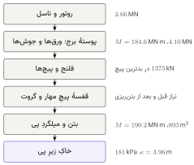
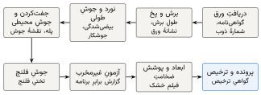
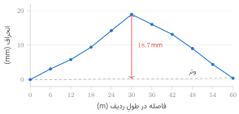
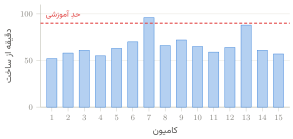
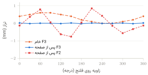
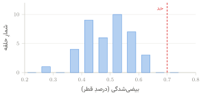
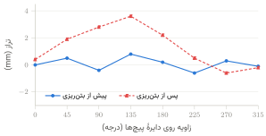
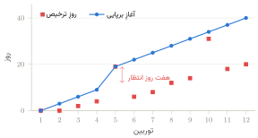
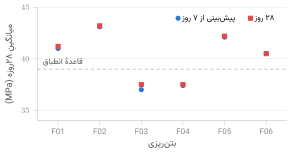
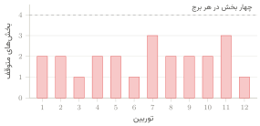

47 ساختِ اجزای عمرانی، سازهای، برج، ردیاب و تجهیزاتِ جانبیِ نیروگاه
47.1 نقشهٔ فصل
پس از این فصل، خواننده میتواند:
- خانوادههای محصولِ عمرانی و سازهای نیروگاه را با ورودیِ طراحی و رواداریِ هر کدام بشناسد: بخشهای برج، پی، میزهای فتوولتائیک، ردیابِ تکمحوره، سازهٔ پست و سکوی کانتینرها.
- برآوردِ مقادیر و یک مسیرِ بارِ سادهشده را از روتور تا خاک بسازد و هر حلقه را به محصول و سابقهاش برساند.
- سابقههای ساختِ فولاد را بخوانَد: گواهینامهٔ کارخانه در برابرِ سفارش، تبارنامهٔ ذوب تا بخش، گواهیِ جوشکار در روزِ جوش، پوششِ آزمونِ غیرمخرب در برابرِ برنامه.
- ساختِ ردیاب و میزها را با شاهد بسنجد: راستیِ لولهٔ پیچشی، رانهها، گالوانیزه.
- سابقههای بتن را بخوانَد: جدولِ خمِ میلگرد، بارنامهٔ بتن، انطباقِ مقاومت، تراز قفسهٔ پیچِ مهار پیش و پس از بتنریزی.
- ساخت در کارخانه و ساخت در ساختگاه را از هم جدا کند و بگوید هر کدام را چه کسی میپذیرد.
- پروندهٔ یک بخشِ برج را بازبینی کند، برنامهٔ بازرسیِ یک پی را از یک مبنای ژئوتکنیکیِ فرضی بنویسد و تصمیمهایی را که فقط مهندسانِ دارای صلاحیت میگیرند، نام ببرد.
پیشنیازها: سازهها (فصل 30) و سامانهٔ تولید و کیفیت (فصل 40).
- گواهینامهٔ کارخانهٔ فولاد چه چیزهایی را نشان میدهد؟
- چرا مقاومتِ بتن با نمونههای چند کامیون سنجیده میشود و نه یکی؟
- همارزِ کربن چه ربطی به جوش دارد؟
- چرا قفسهٔ پیچِ مهار پیش و پس از بتنریزی تراز میشود؟
پاسخها: (۱) ردهٔ فولاد، ترکیبِ شیمیایی، استحکام و چقرمگی، با شمارهٔ ذوب؛ (۲) چون بتن در کامیونهای مختلف فرق دارد و مقاومتِ مشخصه از پراکندگی میآید؛ (۳) هر چه بیشتر، فولاد در جوش سختتر و ترکپذیرتر و پیشگرمِ بیشتری میخواهد؛ (۴) چون بتنریزی ممکن است آن را جابهجا کند. اگر دو پرسش یا بیشتر را نتوانستید، بخش 30.4.1، بخش 29.4.4، بخش 30.4.25 و بخش 29.4.8 را مرور کنید.
جایگاهِ این فصل در نیروگاهِ P. فصلهای ۲۹ و ۳۰ زمین، پی، برج و میزهای نیروگاه را طراحی کردند: برجِ فولادیِ صدمتری در چهار بخش، پیِ ثقلیِ 24 m با 893 m³ بتن برای هر توربین، و میزهای 2P × 26 برای پیکربندیِ D-013 (D-034). این فصل همان محصولها را به سه سازندهٔ ساختگی میبرد: سازندهٔ برج، سازندهٔ ردیاب و تأمینکنندهٔ بتنِ آماده (A-490 تا A-497). نسخهٔ ردیابِ تکمحوره برای مقایسه آمده است. فصلِ ۳۰ برگهٔ همراه، پنجرهٔ جوش، آزمونِ فراصوتی، ضخامتِ پوشش و ابعاد را آموخت و فصلِ ۲۹ مقاومتِ مشخصه و برنامهٔ بازرسیِ پی را. این فصل یک گام جلوتر به سابقهها میرود: گواهینامه در برابرِ سفارش، جوشکار در روزِ جوش، بارنامه در دروازه، و پروندهای که ترخیص را ممکن یا ناممکن میکند. همه با تصمیمِ D-051 جمع میشوند.
سازندهها، دادهها و عیبها ساختگیاند و حدها آموزشی. این فصل هیچ دستورِ ساختی نمیدهد: نه پارامترِ جوشکاری، نه برنامهٔ عملیاتِ حرارتی، نه برنامهٔ عملآوری، نه طرحِ اختلاطِ بتن. طراحیِ سازه و پی و هر پذیرشِ عضوِ ناسازگار کارِ مهندسانِ سازه و ژئوتکنیکِ دارای صلاحیت است (بخش 30.4.6). هیچ عددی در اینجا تأییدِ طراحی نیست. برنامههای این فصل فقط سابقهها را میخوانند و تصمیم را به صاحبِ آن میرسانند.
47.2 الف. ورودیهای طراحی و خانوادههای محصول
47.2.1 خانوادههای محصول و آنچه هر کدام را تعیین میکند
ایده. محصولهای این فصل شش خانوادهاند. هر خانواده یک ورودیِ طراحیِ حاکم دارد که فصلهای ۲۹ و ۳۰ آن را بررسی کردند، یک رواداری که در ساخت مهم است، و یک شاهد برای عمرِ طراحی. فصلِ ۳۰ بارها، کمانش، خستگی، فرکانس و خوردگی را آموخت (بخش 30.2.6، بخش 30.2.8، بخش 30.3.3). اینجا هر کدام به سابقهای در کارخانه یا ساختگاه میرسد.
product families of this chapter and what governs each (teaching)
family governing input
tolerance that matters; evidence of life
tower sections fatigue, buckling, frequency
ovality, flange flatness; coating, weld NDT
turbine foundation overturning, soil, stiffness
anchor-cage level; concrete cover, strength
PV tables (fixed) wind on modules, soil
post plumb, rail line; zinc thickness
single-axis tracker wind stow, torque tube
tube straightness; drive backlash, zinc
substation steel line pull, seismic
bolt-hole positions; zinc
container plinths battery mass, water
level and flatness; concrete cover
every family meets the plant through one interface: the
anchor cage, the post in the ground, the bolt pattern of a
support, the plinth's level - the fabricator's tolerance
and the site's tolerance add up there (lesson C)| ورودیِ طراحی | از کجا میآید | در این فصل به چه سابقهای میرسد |
|---|---|---|
| بارها و ترکیبها | سندِ بارِ سازندهٔ توربین، فصلِ ۳۰ | ضخامتِ ورق در گواهینامه، نقشهٔ جوش |
| مصالح | مشخصهٔ پروژه | گواهینامهٔ کارخانه در برابرِ سفارش |
| خاک و آبِ زیرزمینی | گزارشِ ژئوتکنیک، فصلِ ۲۹ | بازرسیِ کفِ گود، مقاومتِ بتن |
| خستگی | فصلِ ۳۰ | آزمونِ غیرمخرب، کیفیتِ پیوستها |
| خوردگی | خاکِ ساختگاه، فصلهای ۲۹ و ۳۰ | ضخامتِ گالوانیزه و پوشش |
| رواداریها | سازندهٔ توربین و طراح | بیضیشدگی، تختیِ فلنج، ترازِ قفسه |
| عمرِ طراحی | قرارداد، فصلِ ۳۰ | پوششِ بتنیِ میلگرد، پوشش و روی |
رواداری در محلِ رابط. هر خانواده از یک رابط به نیروگاه وصل میشود: قفسهٔ پیچِ مهار، پایهٔ کوبیده در خاک، الگوی سوراخِ یک تکیهگاه، ترازِ یک سکو. رواداریِ سازنده و رواداریِ ساختگاه در همینجا روی هم جمع میشوند (بخش 30.4.18). برجی که در کارخانه کاملاً درست ساخته شده، روی قفسهای کج همچنان کج است (بخش 47.4.3).
47.2.2 برآوردِ مقادیر
ایده. برآوردِ مقادیر جرمِ فولاد، حجمِ بتن و جرمِ میلگرد را از هندسه میدهد. برای پوستهٔ استوانهایِ یک بخش با قطرِ میانگینِ \(\bar D\)، ضخامتِ \(t\) و طولِ \(L\):
\[ m = \pi\,\bar D\,t\,L\,\rho \tag{47.1}\]
برآورد از دو سو انجام میشود: از طرح و از نقشههای ساخت. اختلافِ این دو یک یافته است.
def tower_steel() -> list:
"""Shell mass of each section from its geometry: pi D_mean t L rho."""
rows = []
for sec, d0, d1, t_mm, ln in src.TOWER:
d = (d0 + d1) / 2
m = math.pi * d * t_mm / 1000 * ln * src.STEEL_RHO / 1000 # t
rows.append((sec, d, t_mm, ln, m))
return rowsmaterial take-off (teaching): one turbine and the PV field
tower section D mean m t mm length m shell t
1 4.31 46 25 122.2
2 3.94 40 25 97.0
3 3.56 32 25 70.3
4 3.19 26 25 51.1
shell from the ch 11 wall schedule 341 t (ch 11: 340 t);
ch 30's fatigue steel low down +32 t: 373 t of shell
flanges, door frame and internals +12%: 417 t a tower
foundation: 893 m3 concrete, rebar at 95 kg/m3: 85 t
twelve turbines: 5,010 t of tower steel, 10,716 m3 concrete, 1,018 t rebar
PV: 2,100 tables of 2 x 26 at 15 kN: 3,211 t of galvanized steel
the take-off from the fabrication drawings must show ch 30's
32 t: one that matches ch 11's 340 t of shell means the
drawings still carry the old walls (lesson B checks the plates)مثال 47.1 (سیودو تنی که باید در نقشه باشد) پرسش. پوستهٔ برج از جدولِ دیوارهٔ فصلِ ۱۱ چند تن است؟ با فولادِ خستگیِ فصلِ ۳۰ و فلنجها چند تن؟
پاسخ. بخشِ ۱: \(\pi \times 4.31 \times 0.046 \times 25 \times 7850 = 122\,\text{t}\). چهار بخش رویهم 341 t، همان 340 t فصلِ ۱۱. با 32 t فولادِ خستگی در پایین 373 t پوسته و با 12 % برای فلنجها، چارچوبِ در و تجهیزاتِ درونی، حدودِ 417 t برای هر برج.
بررسیِ معقولبودن. یک حلقه، یعنی یکدهمِ بخشِ ۱، 12.2 t است (مثال 47.55).
تفسیر. برآورد از نقشههای ساخت باید آن 32 t را نشان دهد. برآوردی که با 340 t فصلِ ۱۱ برابر باشد یعنی نقشهها هنوز دیوارههای قدیمی را دارند. این وارسی پیش از سفارشِ ورق انجام میشود. ورقها بر اساسِ آن ضخامت سفارش داده میشوند (بخش 47.3.2).
47.2.3 مسیرِ بارِ سادهشده
ایده. بار از روتور تا خاک از زنجیرهای از محصولها میگذرد. هر حلقه محصولِ این فصل است و سابقهٔ خودش را دارد. در حالتِ حدیِ پارکشده، لنگرِ پایهٔ برج \(M\) از فلنج و پیچها میگذرد. بدترین پیچ از \(n\) پیچ روی دایرهای به قطرِ \(D_\text{b}\):
\[ F_\text{bolt} = \frac{4M}{n\,D_\text{b}} - \frac{W}{n} \tag{47.2}\]
سپس لنگر و بارِ قائم به زیرِ پی میرسند. خروج از مرکزِ \(e = M/V\) سطحِ فشاری \(A'\) و فشارِ خاک را میدهد (بخش 30.5.1).
simplified load path, extreme parked case (teaching, ch 30 loads)
rotor and nacelle 2.66 MN and tower 4.10 MN down the shell
base moment 184.6 MN m, shear 1.60 MN -> 120 bolts on 4.3 m:
worst flange bolt pulled by 1,375 kN; the joint stays closed
below 1,818 kN (preload 1,600 kN, ch 11)
at the underside of the base (3.5 m down): M = 190.2 MN m
vertical load 48.0 MN (top, tower, 893 m3 concrete, 1100 m3 fill)
eccentricity 3.96 m on a 24 m base; compressed area 266 m2 of 452
soil pressure 181 kPa against ch 30's dense ground
each link of the path is a product of this chapter: shell
plates and welds, flange and bolts, anchor cage and grout,
concrete and rebar - and each link has its own record
مثال 47.2 (از ۱۸۴٫۶ مگانیوتنمتر تا ۱۸۱ کیلوپاسکال) پرسش. بدترین پیچِ فلنج چقدر کشیده میشود؟ فشارِ خاک زیرِ پی چقدر است؟
پاسخ. \(F = 4 \times 184.6/(120 \times 4.30) - 6.76/120 = 1.431 - 0.056 = 1.375\,\text{MN}\). اتصال تا 1818 kN بسته میماند (پیشتنیدگیِ 1600 kN، فصلِ ۱۱). زیرِ پی: \(V = 48.0\,\text{MN}\) و \(M = 190.2\,\text{MN}\,\text{m}\)، پس \(e = 3.96\,\text{m}\)، سطحِ فشاری 266 m² از 452 و فشار 181 kPa.
تفسیر. این حساب طراحی نیست. بار از سندِ سازندهٔ توربین و ضریبها از آییننامه میآیند. کارِ این حساب این است که نشان دهد هر حلقه کجاست و سابقهاش چیست: ورق و جوش، فلنج و پیچ، قفسه و گروت، بتن و میلگرد. اگر یکی از این سابقهها نباشد، زنجیره اثباتنشده است، هرچقدر هم حساب درست باشد.
47.2.4 ردیابِ تکمحوره: گشتاور در حالتِ ایمن
ایده. ردیاب در باد به زاویهٔ امن میرود. باد گشتاوری حولِ محورِ لولهٔ پیچشی میسازد که رانهٔ گردشی باید نگه دارد. با فشارِ دینامیکیِ \(q\)، ضریبِ گشتاورِ \(C_m\)، سطحِ ردیف \(A\) و وترِ ماژول \(c\):
\[ T = q\,C_m\,A\,c, \qquad q = \tfrac{1}{2}\rho v^2 \tag{47.3}\]
single-axis tracker row: 52 modules in portrait, chord 2.278 m, area 134 m2
hinge moment T = q Cm A c, Cm 0.1 at stow (teaching); drive holds 40 kN m
wind m/s q Pa torque kN m share of the drive
12.0 78 2.4 6%
18.0 177 5.4 14%
30.0 491 15.0 38%
41.1 921 28.2 70%
the 50-year gust uses most of the drive's holding torque even
at stow: a drive with large backlash (lesson B) starts to
rock in gusts and the row can flutter - the static number
is the easy part; the dynamic check is the tracker maker's
wind-tunnel and test evidence (ch 39)مثال 47.3 (هفتاد درصد در تندبادِ پنجاهساله) پرسش. در تندبادِ 41.1 m/s چه سهمی از گشتاورِ نگهداریِ رانه به کار میرود؟
پاسخ. \(q = 0.5 \times 1.09 \times 41.1^2 = 921\,\text{Pa}\) و \(T = 921 \times 0.10 \times 134 \times 2.278 = 28.2\,\text{kN}\,\text{m}\)، یعنی 70 % از 40 kN m.
تفسیر. عددِ ایستا بخشِ ساده است. ردیفِ دراز در باد ممکن است به نوسانِ خودبرانگیخته برسد. رانهای با لقیِ زیاد (مثال 47.11) آن را آسانتر میکند. شاهدِ رفتارِ پویا آزمونِ تونلِ باد و آزمونهای سازندهٔ ردیاب است و در خرید خواسته میشود (فصلِ ۳۹).
47.2.5 حرکتِ گرماییِ لولهٔ پیچشی
ایده. لولهٔ فولادیِ 60 m میانِ شبِ زمستان و ظهرِ تابستان بلند و کوتاه میشود: \(\Delta L = \alpha\,L\,\Delta T\) (بخش 30.2.13).
a 60 m torque tube between a winter night and a summer noon (+/-40 K)
movement 28.8 mm each way from the reference temperature
the bearings let the tube slide; a bearing installed with no
room at one end, or a tube clamped at both ends, turns that
movement into force on the posts - the installation record
gives the temperature on the day the bearings were setمثال 47.4 (سه سانتیمتر به هر سو) پرسش. لوله با ±40 K چقدر جابهجا میشود؟
پاسخ. \(12\times10^{-6} \times 60\,000 \times 40 = 28.8\,\text{mm}\) به هر سو.
تفسیر. یاتاقانها اجازهٔ لغزش میدهند. یاتاقانی که بیفاصله نصب شده یا لولهای که در دو سر بسته شده، این حرکت را به نیرو روی پایهها تبدیل میکند. سابقهٔ نصب دمای روزِ تنظیمِ یاتاقانها را مینویسد تا فاصلهها معنا داشته باشند.
47.2.6 خطاهای رایج
47.2.7 جرمِ توزینشده و فرکانسِ برج
ایده. فرکانسِ نخستِ برج در فصلِ ۳۰ با جرمِ مؤثرِ بالای برج حساب شد: جرمِ روتور و ناسل بهاضافهٔ حدودِ یکچهارمِ جرمِ برج (بخش 30.2.14). اگر جرمِ ساختهشده از جرمِ طرح بیشتر باشد، فرکانس، با سختیِ یکسان، با ریشهٔ نسبتِ جرمها کم میشود:
\[ \frac{f_\text{new}}{f_\text{old}} = \sqrt{\frac{m_\text{top} + 0.24\,m_\text{old}}{m_\text{top} + 0.24\,m_\text{new}}} \tag{47.4}\]
sections weighed at the fabricator against the calculated mass (+/-3%)
section calculated t weighed t difference
1 159.3 158.1 -0.8%
2 122.1 121.6 -0.4%
3 78.8 74.0 -6.1%
4 57.3 57.0 -0.5%
off by more than 3%: section 3 - its platform and
ladder are not yet fitted; the dossier says 'complete'
the weighed tower is 411 t against the 372 t of ch 30's frequency
check: top mass 271 + 0.24 x tower -> f1 x 0.987 (-1.3%, mass only)
the fittings' mass belongs in the frequency model; the margin
to 1P of ch 30 is re-checked with the weighed towerمثال 47.5 (یکونیم درصد از حاشیه) پرسش. برجِ توزینشده چند تن است؟ فرکانس چقدر جابهجا میشود؟ کدام بخش با محاسبه نمیخواند؟
پاسخ. 411 t در برابرِ 372 t فصلِ ۳۰. \(\sqrt{(271 + 0.24 \times 372)/(271 + 0.24 \times 411)} = 0.987\)، یعنی 1.3 % کمتر، فقط از جرم. بخشِ ۳ 6.1 % سبکتر از محاسبه است.
تفسیر. جرمِ تجهیزاتِ درونی در مدلِ فرکانس جا دارد. حاشیهٔ فرکانسِ نخست تا سرعتِ چرخشِ روتور در فصلِ ۳۰ با برجِ توزینشده دوباره سنجیده میشود. بخشِ ۳ سکو و نردبانش را هنوز ندارد، در حالی که پروندهاش «کامل» میگوید. توزین یک وارسیِ ارزان است که پرونده را میسنجد.
- شش خانوادهٔ محصولِ این فصل را نام ببرید.
- جدول 47.1 را توضیح دهید.
- چرا رواداریها در محلِ رابط جمع میشوند؟
- معادلهٔ 47.1 را برای بخشِ ۴ حساب کنید.
- چرا برآوردِ مقادیر از نقشههای ساخت با برآورد از طرح مقایسه میشود؟
- معادلهٔ 47.2 را توضیح دهید.
- چرا حسابِ مسیرِ بار طراحی نیست؟
- شکل 47.1 را بخوانید.
- معادلهٔ 47.3 را توضیح دهید.
- چرا لقیِ رانه در باد مهم است؟
- لولهٔ 80 m با ±40 K چقدر جابهجا میشود؟
47.3 ب. ساخت و تولید
47.3.1 مسیرِ یک بخشِ برج در کارخانه
ایده. یک بخشِ برج از ورق شروع میشود و با گواهیِ ترخیص تمام. هر گام هدفی دارد و سابقهای به جا میگذارد. فصلِ ۳۰ برگهٔ همراه را با نقطههای توقف و شاهد نوشت (بخش 30.4.1). این بخش سابقهها را میخوانَد و با سفارش، برنامه و یکدیگر میسنجد.

تعریفها. حلقه یک ورقِ نوردشده است که با یک جوشِ طولی بسته شده. ده حلقه با جوشهای محیطی یک بخشِ 25 m میسازند. شمارهٔ ذوب شناسهٔ یک نوبتِ ذوبِ فولاد در کارخانهٔ فولاد است و در گواهینامه میآید. نقشهٔ جوش هر جوش را با شماره، جوشکار، روش و تاریخ نشان میدهد.
47.3.2 گواهینامهٔ کارخانه در برابرِ سفارش
ایده. هر ورق گواهینامهای دارد که ردهٔ فولاد، ضخامت، نتیجهٔ آزمونِ ضربه و ترکیبِ شیمیایی را میدهد. گواهینامه با سفارش سنجیده میشود، نه فقط با ردهٔ نوشتهشده در آن. همارزِ کربن از ترکیبِ شیمیایی حساب میشود و میلِ فولاد به سختشدن در جوش را نشان میدهد (بخش 30.4.25):
\[ \text{CEV} = C + \frac{Mn}{6} + \frac{Cr + Mo + V}{5} + \frac{Ni + Cu}{15} \tag{47.5}\]
def check_cert(cert: dict, order: dict) -> list[str]:
"""Compare one mill certificate with the purchase order: grade,
thickness range, impact-test temperature and energy, CEV limit."""
out = []
if cert["grade"] != order["grade"]:
out.append(f"grade {cert['grade']} (ordered {order['grade']})")
lo, hi = order["t_range"]
if not lo <= cert["t_mm"] <= hi:
out.append(f"thickness {cert['t_mm']} mm outside {lo}-{hi}")
if cert["impact_c"] > order["impact_c"]:
out.append(f"impact tested at {cert['impact_c']} C (ordered "
f"{order['impact_c']} C)")
if min(cert["impact_j"]) < order["impact_j"]:
out.append(f"impact energy {min(cert['impact_j'])} J below "
f"{order['impact_j']} J")
e = cev(**cert["chem"])
if e > order["cev_max"]:
out.append(f"CEV {e:.2f} above {order['cev_max']:.2f}")
return outmill certificates against the order: S355, 20-50 mm,
impact at -20 C >= 27 J (each of three), CEV <= 0.43
plate heat t mm CEV finding
P101 H5521 46 0.41 ok
P102 H5521 46 0.41 ok
P103 H5523 46 0.41 impact tested at 0 C (ordered -20 C)
P104 H5524 40 0.38 impact energy 22 J below 27 J
P105 H5530 40 0.49 CEV 0.49 above 0.43
P106 H5531 32 0.34 grade S275 (ordered S355)
P107 H5532 32 0.39 ok
P108 H5533 26 0.38 ok
4 of 8 plates do not match the order:
a certificate tested at 0 C says nothing about -20 C; a mean
of three impacts can pass while one specimen fails; a high
CEV needs more preheat than the qualified procedure assumed;
a lower grade is a different steel - each is a hold, not a
remark (ch 30 preheat, ch 40 certificates)مثال 47.6 (چهار ورق از هشت) پرسش. کدام ورقها با سفارش نمیخوانند و چرا هر کدام مهم است؟
پاسخ. P103 در 0 °C آزموده شده و سفارش -20 °C است. P104 یک نمونهٔ ضربه با 22 J دارد، زیرِ 27 J، هرچند میانگینش 34 J است. P105 همارزِ کربنِ 0.49 دارد، بالاتر از 0.43. P106 ردهٔ S275 است.
تفسیر. گواهیِ 0 °C دربارهٔ -20 °C چیزی نمیگوید و برجی که زمستانِ سرد دارد چقرمگی را در سرما لازم دارد. همارزِ کربنِ بالا پیشگرمی بیش از آنچه روشِ جوشِ تأییدشده فرض کرده میخواهد. ردهٔ پایینتر فولادِ دیگری است. هر کدام یک توقف است، نه یک یادداشت. تصمیم با طراح است (بخش 47.5.3).
47.3.3 از ذوب تا بخش
ایده. ورقی که گواهیاش ایراد دارد، پیشتر بریده و نورد شده است. پرسش این است که کدام حلقهها و کدام بخشها. نشانهگذاریِ ورق روی هر حلقه پاسخ را ممکن میکند (بخش 30.4.7).
heat H5523 (impact tested at the wrong temperature): where did it go?
plates: P103
cans: 1-07, 1-08, 1-09, 1-10
tower section(s): 1
four cans of section 1 - the lowest, most loaded one - come
from a plate whose toughness at -20 C is unknown: the maker
re-tests specimens from the same heat at -20 C or the cans
are replaced; without the plate-to-can marks the whole
section would be in questionمثال 47.7 (چهار حلقه از پایینترین بخش) پرسش. ذوبِ H5523 به کجا رفت؟
پاسخ. ورقِ P103، حلقههای 1-07 تا 1-10 در بخشِ ۱.
تفسیر. بخشِ ۱ پایینترین و پرتنشترین بخش است. سازنده نمونههایی از همان ذوب را در -20 °C دوباره میآزماید، یا حلقهها عوض میشوند. بینشانهٔ ورق روی حلقهها، همهٔ بخش زیرِ پرسش میرفت.
47.3.4 جوشکار در روزِ جوش
ایده. هر جوشکار گواهیای دارد برای یک روشِ جوشکاری و چند وضعیتِ جوشکاری، با تاریخِ انقضا. نقشهٔ جوش با گواهیِ جوشکار در روزِ جوش سنجیده میشود. دستورالعملِ جوشکاری و آزمونهای پشتیبانش کارِ هماهنگکنندهٔ جوشِ سازنده است و این کتاب پارامترهای آن را نمیدهد.
weld log of section 1 against the welders' qualifications
joint welder process position date finding
C1-01 W-11 SAW PA 2027-02-10 ok
C1-02 W-12 SAW PA 2027-03-02 expired 2027-02-28
C1-03 W-14 SAW PA 2027-03-03 ok
L1-01 W-11 SAW PA 2027-02-12 ok
F1-01 W-13 FCAW PF 2027-03-05 not qualified in position PF
F1-02 W-14 FCAW PB 2027-03-06 ok
D1-01 W-12 FCAW PB 2027-02-20 not qualified for FCAW
A1-01 W-14 FCAW PC 2027-03-08 ok
3 joints welded by someone not qualified for them on that
day: an expired card, a position not covered, a process not
held - the welds may be good, but they are not proven; the
fix is the procedure's: extra NDT of those joints and a
qualification test, decided by the fabricator's welding
coordinator and accepted by the inspectorمثال 47.8 (سه جوشِ اثباتنشده) پرسش. کدام جوشها با جوشکارِ واجدِ شرایط زده نشدهاند؟
پاسخ. C1-02 دو روز پس از انقضای گواهیِ W-12. F1-01 در وضعیتِ PF که W-13 گواهیاش را ندارد. D1-01 با روشی که W-12 اصلاً ندارد.
تفسیر. این جوشها ممکن است خوب باشند، ولی اثباتشده نیستند. راهِ حل در روشِ سازنده است: آزمونِ غیرمخربِ بیشترِ همان جوشها و آزمونِ صلاحیت، به تصمیمِ هماهنگکنندهٔ جوش و با پذیرشِ بازرس. گزارشِ عدمانطباقِ NCR-206 همین را ثبت کرده است.
47.3.5 پوششِ آزمونِ غیرمخرب
ایده. برنامهٔ بازرسی برای هر ردهٔ جوش سهمی از طول را میخواهد. فصلِ ۳۰ آزمونِ فراصوتیِ درزها را دید (بخش 30.4.5). اینجا پوشش با برنامه سنجیده میشود، رده به رده.
NDT coverage of section 1 against the inspection plan
weld category plan done status
circumferential 100% 100% ok
longitudinal 100% 100% ok
flange-to-shell 100% 100% ok
door frame 100% 100% ok
attachments 10% 4% SHORT
short: attachments - 1.2 m of 30 m inspected; the plan asks
for 10 %: 3.0 m; the attachments (ladder brackets, cable
clamps) are where fatigue cracks start on a tower wall, so
the 10 % is chosen across all attachment types, not the
easiest ones (ch 30 fatigue, door frame)مثال 47.9 (پیوستها، جایی که ترک شروع میشود) پرسش. کدام رده از برنامه کم دارد؟
پاسخ. پیوستها: 1.2 m از 30 m، یعنی 4 %. برنامه 10 % یعنی 3.0 m میخواهد.
تفسیر. پیوستها، یعنی پایههای نردبان و بستهای کابل، جای آغازِ ترکِ خستگی روی دیوارهٔ برجاند (بخش 30.2.8). پس آن 10 % میانِ همهٔ گونههای پیوست پخش میشود، نه روی سادهترینها.
47.3.6 طولِ برش و پلهٔ میانِ حلقهها
ایده. محیطِ هر حلقه همان طولِ ورقِ بریده است. خطای طولِ برش \(\Delta L\) قطر را \(\Delta D = \Delta L/\pi\) تغییر میدهد. وقتی دو حلقهٔ همجوار جفت میشوند، نیمِ اختلافِ قطرشان یک پله در درز میسازد.
section 1: plate cut lengths against the drawing, and the step between cans
(teaching limit for the step: min(0.1 t, 3 mm) = 3.0 mm)
seam dev A mm dev B mm step mm verdict
1 2 -1 0.48 ok
2 -1 12 2.07 ok
3 12 -9 3.34 OVER
4 -9 1 1.59 ok
5 1 0 0.16 ok
6 0 -7 1.11 ok
7 -7 2 1.43 ok
8 2 4 0.32 ok
9 4 -2 0.95 ok
over: seam 3 - a can cut 12 mm long next to one cut
9 mm short leaves a step the welder cannot bridge; the cut
length is checked before rolling, when a re-cut is cheap,
not at fit-up (ch 30 ovality)مثال 47.10 (دوازده میلیمتر بلند کنارِ نه میلیمتر کوتاه) پرسش. پلهٔ درزِ ۳ چقدر است؟
پاسخ. \((12 + 9)/\pi/2 = 3.34\,\text{mm}\)، بیشتر از حدِ آموزشیِ 3.0 mm.
تفسیر. پلهای که جوشکار نتواند پر کند، تمرکزِ تنش در درزی است که بارِ خستگی میبیند. طولِ برش پیش از نورد وارسی میشود، وقتی برشِ دوباره ارزان است، نه هنگامِ جفتکردن (بخش 30.4.3).
47.3.7 ردیاب: راستیِ لوله و رانهها
ایده. راستیِ لولهٔ پیچشی با نقشهبرداری در چند نقطه سنجیده میشود. بیشترین فاصله از وتر میانِ دو سر، انحراف است. رانههای گردشی در پایانِ خطِ تولید آزموده میشوند و سابقهای با لقی، آزمونِ نگهداری و محمولهٔ روانکار دارند.
tracker row R-17: torque tube surveyed every 6 m over 60 m
largest offset from the chord 18.7 mm at 30 m (teaching limit 12 mm)
slew drives at end of line (backlash limit 0.15 deg):
SD-301 0.08 deg pass lubricant L-7 ok
SD-302 0.09 deg pass lubricant L-7 ok
SD-303 0.21 deg pass lubricant L-8 backlash 0.21 deg
SD-304 0.07 deg pass lubricant L-7 ok
SD-305 0.08 deg - lubricant L-8 holding test missing
SD-306 0.10 deg pass lubricant L-8 ok
a bent tube puts the modules of one row at several angles and
loads the bearings sideways; a drive with large backlash lets
the row flutter in wind instead of holding its stow angle;
the drive with the large backlash and the one with no holding
record both used lubricant lot L-8 (so did SD-306, which
passed) - a question to the maker, not yet a verdict on the lot
مثال 47.11 (لولهٔ خمیده، رانهٔ لق، سابقهٔ ناقص) پرسش. کدام یافتهها در ردیفِ R-17 هست؟
پاسخ. لوله 18.7 mm در میانه از وتر دور است، بیش از حدِ آموزشیِ 12 mm. رانهٔ SD-303 لقیِ 0.21° دارد و SD-305 سابقهٔ آزمونِ نگهداری ندارد.
تفسیر. لولهٔ خمیده ماژولهای یک ردیف را در چند زاویه نگه میدارد و یاتاقانها را از پهلو بار میکند. رانهٔ لق نوسان در باد را آسانتر میکند (مثال 47.3). هر دو رانهٔ دارای یافته از محمولهٔ روانکارِ L-8 بودند، ولی SD-306 هم از همان محموله است و سالم. این پرسشی برای سازنده است، نه حکمی دربارهٔ محموله.
47.3.8 گالوانیزه روی پایهها
ایده. پایههای میزها با گالوانیزهٔ گرم محافظت میشوند و ضخامتِ روی، عمرِ آنها در خاکِ ساختگاه است (بخش 30.3.3). هر محموله با دو قاعدهٔ آموزشی پذیرفته میشود: میانگین و تکتکِ خوانشها.
hot-dip zinc on PV posts by lot (teaching rule: mean >= 85 um,
each reading >= 70 um)
lot steel mm mean um lowest um verdict
Z-01 4.0 98.0 88 ok
Z-02 4.0 72.6 66 REJECT
Z-03 6.0 107.1 98 ok
rejected: Z-02 - posts from it would lose their zinc
years early in the site's aggressive soil (ch 30 zinc life);
the lot is re-galvanized or used where the soil is mild,
decided by the designer, with the post numbers recordedzinc on the PV field's 3,211 t of steel (teaching: 30 m2 a tonne)
surface 96,330 m2; at 85 um and 7.14 t/m3: 58 t of zinc
the zinc is the PV structure's corrosion life (ch 30) and a
share of its footprint (ch 33): a lot below the thickness
rule (lesson B) shortens bothمثال 47.12 (محمولهای با میانگینِ ۷۳ میکرون) پرسش. کدام محموله رد میشود؟ روی در کلِ میدانِ فتوولتائیک چقدر است؟
پاسخ. Z-02 با میانگینِ 72.6 µm و کمینهٔ 66 µm. کلِ میدان: \(3211 \times 30 \times 85\times10^{-6} \times 7.14 = 58\,\text{t}\) روی.
تفسیر. پایههای Z-02 در خاکِ خورنده سالها زودتر رویشان را از دست میدهند. یا دوباره گالوانیزه میشوند یا جایی که خاک ملایم است به کار میروند، به تصمیمِ طراح و با ثبتِ شمارهٔ پایهها. روی هم عمرِ سازه است و هم سهمی از ردپای آن (فصلِ ۳۳).
47.3.9 جدولِ خمِ میلگرد
ایده. میلگردِ پی از جدولِ خمِ میلگرد بریده و خم میشود: نشانه، قطر، کدِ شکل، طول و شمار. جرمِ میلگرد در هر متر، با قطرِ \(d\) بر حسبِ میلیمتر:
\[ m' = \frac{d^2}{162}\,\text{kg/m} \tag{47.6}\]
جدول، مانندِ فهرستِ کابلِ فصلِ ۴۶، پیش از بریدنِ نخستین میلگرد وارسی میشود (بخش 46.5.1).
REQUIRED = ["mark", "dia", "shape", "length_mm", "number"]
def check_bbs(rows: list[dict], dias: set[int], shapes: set[str]) -> list:
"""Return (mark, problem) for a bar bending schedule: missing fields,
duplicate marks, sizes or shape codes not allowed, lengths that look
like metres."""
out, seen = [], set()
for r in rows:
m = r.get("mark") or "?"
for f in REQUIRED:
if r.get(f) in (None, ""):
out.append((m, f"missing {f}"))
if m in seen:
out.append((m, "duplicate mark"))
seen.add(m)
if r.get("dia") not in (None, "") and r["dia"] not in dias:
out.append((m, f"diameter {r['dia']} not allowed"))
if r.get("shape") not in (None, "") and r["shape"] not in shapes:
out.append((m, f"shape code {r['shape']} unknown"))
ln = r.get("length_mm")
if isinstance(ln, (int, float)) and 0 < ln < 50:
out.append((m, "length looks like metres, not mm"))
return outbar bending schedule of one foundation (excerpt, 9 rows)
mark problem
B04 length looks like metres, not mm
B05 duplicate mark
B07 diameter 22 not allowed
B08 shape code 99 unknown
B09 missing shape
5 problems; mass of the clean rows 30.2 t (d^2/162 kg/m)
a length of 3.6 'mm' would cut 240 stubs; a duplicate mark
makes two bundles answer to one label on site; a 22 mm bar
is not stocked and would be swapped without a record - the
schedule is checked before the bars are cut, like the cable
schedule of ch 46مثال 47.13 (۲۴۰ تکهٔ سهونیم میلیمتری) پرسش. هر خطای جدول به کجا میرسید؟
پاسخ. طولِ 3.6 در ستونِ میلیمتر ۲۴۰ تکهٔ بیمصرف میبُرید. نشانهٔ تکراری دو بسته را زیرِ یک برچسب میبرد. میلگردِ 22 mm در انبار نیست و بیسابقه با اندازهٔ دیگری عوض میشد. کدِ 99 و شکلِ خالی خمکار را به حدس وامیداشت.
تفسیر. جرمِ ردیفهای سالم 30.2 t است. وارسی پیش از بریدن ارزانترین جاست. پس از بتنریزی، میلگردِ نادرست فقط با برداشتِ مغزه و تصمیمِ مهندسِ سازه دیده و درست میشود.
47.3.10 بارنامهٔ بتن در دروازه
ایده. هر کامیونِ بتن یک بارنامه دارد: ساعتِ ساخت، دما و آبی که در ساختگاه افزوده شده. سه قاعدهٔ آموزشی در دروازه وارسی میشوند: زمان تا پایانِ تخلیه، دمای بتن و نبودِ آبِ افزوده. فصلِ ۲۹ بتنِ هوای گرم و بتنریزیِ حجیم را دید (بخش 29.4.5، بخش 29.4.6).
def check_ticket(t: dict, max_min: float, max_temp: float,
max_water_l: float) -> list[str]:
"""Batching ticket and delivery record: time from batching to the end
of discharge, concrete temperature, water added at site."""
out = []
age = t["discharged_min"]
if age > max_min:
out.append(f"{age:.0f} min from batching (limit {max_min:.0f})")
if t["temp_c"] > max_temp:
out.append(f"concrete at {t['temp_c']:.0f} C (limit {max_temp:.0f})")
if t["water_added_l"] > max_water_l:
out.append(f"{t['water_added_l']:.0f} L water added on site")
return outdelivery tickets of the T05 foundation pour, 15 trucks (teaching rules:
discharged within 90 min, concrete <= 32 C, no water added on site)
truck 7: 96 min from batching (limit 90)
truck 8: 40 L water added on site
truck 10: concrete at 33 C (limit 32)
3 trucks outside the rules; the concrete of each is either
refused at the gate or its place in the pour is recorded, so
the strength results and any core later can be tied to it;
water added on site raises the water-cement ratio the mix was
designed for - the supplier's mix design, not the driver,
decides what may be added
مثال 47.14 (سه کامیون بیرون از قاعده) پرسش. کدام کامیونها قاعدهها را نمیگذرانند؟
پاسخ. کامیونِ ۷ با 96 دقیقه، کامیونِ ۸ با 40 L آبِ افزوده و کامیونِ ۱۰ با 33 °C.
تفسیر. بتنِ هر کدام یا در دروازه رد میشود، یا جایش در بتنریزی ثبت میشود تا نتیجهٔ مقاومت و هر مغزهٔ بعدی به آن برسد. آبِ افزوده نسبتِ آب به سیمانِ طرحِ اختلاط را بالا میبرد. اینکه چه چیزی افزودنی است را طرحِ اختلاطِ تأمینکننده تعیین میکند، نه راننده.
47.3.11 انطباقِ مقاومت با هر بتنریزی
ایده. فصلِ ۲۹ مقاومتِ مشخصه را از همهٔ نتیجهها گرفت (بخش 29.4.4). اینجا هر بتنریزی جدا با یک قاعدهٔ آموزشیِ انطباق سنجیده میشود: میانگینِ سه نتیجه دستکم \(f_\text{ck} + 4\) و هر نتیجه دستکم \(f_\text{ck} - 4\) مگاپاسکال.
28-day strength by pour against a teaching conformity rule, class 35:
mean of three >= 39 MPa and each >= 31 MPa
pour results MPa mean verdict
F01 41.2, 40.1, 42.3 41.2 ok
F02 43.7, 41.8, 44.0 43.2 ok
F03 38.0, 36.5, 37.9 37.5 FAIL mean
F04 40.8, 30.2, 41.5 37.5 FAIL mean, one result 30.2
F05 42.6, 43.1, 41.0 42.2 ok
F06 39.9, 40.4, 41.2 40.5 ok
not conforming: F03, F04
F03 is low all round (a weak delivery); F04 has one low
specimen among two good ones (a bad specimen or a bad truck) -
the tickets of that pour and the specimen records decide
which; the structural engineer decides on cores and on what
the foundation needs (ch 29 characteristic strength)concrete specimens: one set of 3 for each 50 m3 (teaching)
one foundation of 893 m3: 18 sets, 54 specimens
twelve foundations: 648 specimens; at 40 a day the laboratory needs 16 days
pours run on a schedule set by the turbine deliveries: the
laboratory's capacity, curing tanks and the 28-day date of
each pour belong in the construction plan (ch 49)مثال 47.15 (دو شکلِ نابسامانی) پرسش. کدام بتنریزیها نمیخوانند و تفاوتشان چیست؟
پاسخ. F03 با میانگینِ 37.5 همهجا پایین است. F04 دو نتیجهٔ خوب و یکی 30.2 MPa دارد.
تفسیر. F03 یک تحویلِ ضعیف را نشان میدهد. F04 یک نمونهٔ بد یا یک کامیونِ بد را، و بارنامهها و سابقهٔ نمونهها میگویند کدام. دربارهٔ مغزهگیری و نیازِ پی، مهندسِ سازه تصمیم میگیرد. برای دوازده پی 648 نمونه لازم است. ظرفیتِ آزمایشگاه و تاریخِ ۲۸روزهٔ هر بتنریزی در برنامهٔ ساخت میآیند (فصلِ ۴۹).
47.3.12 خطاهای رایج
- سنجیدنِ گواهینامه با ردهٔ نوشتهشده در خودش، نه با سفارش (مثال 47.6).
- برشِ ورق بیانتقالِ نشانهٔ ورق به حلقهها (مثال 47.7).
- وارسیِ گواهیِ جوشکار در روزِ بازرسی، نه در روزِ جوش (مثال 47.8).
- پذیرشِ پوششِ آزمونِ غیرمخرب در کل، نه رده به رده (مثال 47.9).
- وارسیِ طولِ برش پس از نورد (مثال 47.10).
- پذیرشِ گالوانیزه یا مقاومت فقط با میانگین (مثال 47.12، مثال 47.15).
- بریدنِ میلگرد از جدولِ وارسینشده (مثال 47.13).
47.3.13 تختیِ فلنج پس از برداشتنِ صفحه
ایده. ترازِ فلنج در ۱۲ نقطه سنجیده میشود. بخشی از گسترهٔ خام فقط کجیِ کلِ فلنج است که صفحهٔ نقشهبرداری آن را برمیدارد. آنچه میماند تختی است: موجهایی که هیچ صفحهای برنمیدارد. همان برازشِ معادلهٔ 47.7 اینجا برای جداکردنِ این دو به کار میرود.
flange flatness at 12 points after removing the best plane
(teaching limit 1.2 mm)
flange raw range mm tilt part mm flatness mm verdict
F1 0.60 0.09 0.55 ok
F2 1.70 0.41 1.60 OVER (NCR-202)
F3 0.60 0.61 0.04 ok
F4 0.40 0.02 0.41 ok
F3's raw range is mostly a tilt of the whole flange, which the
survey's plane removes (the tower stands on the plane); F2
is wavy - two humps that no plane removes, and a wavy flange
opens on one side under load (ch 11 flange, ch 30 joint);
the flatness is read after the plane, never as a raw range
مثال 47.16 (گسترهٔ خامِ برابر، دو فلنجِ متفاوت) پرسش. چرا F3 با گسترهٔ خامِ 0.60 mm تخت است و F2 نه؟
پاسخ. تقریباً همهٔ گسترهٔ F3 کجی است و پس از برداشتنِ صفحه 0.04 mm میماند. F2 دو برآمدگی دارد و پس از صفحه 1.60 mm میماند، بیش از حدِ 1.2 mm.
تفسیر. برج روی صفحه مینشیند، پس کجی را گروت و قفسه جبران میکنند. موج را هیچچیز جبران نمیکند. فلنجِ موجدار زیرِ بار از یک سو باز میشود (بخش 30.4.22). تختی همیشه پس از صفحه خوانده میشود، هرگز بهصورتِ گسترهٔ خام. این همان NCR-202 است.
47.3.14 تعمیرهای فراصوتی به ازای جوشکار
ایده. هر تعمیرِ یافتهشده در آزمونِ فراصوتی به جوشکارِ آن جوش برمیگردد. با نرخِ کلیِ \(\bar p\) تعمیر در هر متر، جوشکاری که \(L\) متر جوش داده، بهطورِ میانگین \(\bar p L\) تعمیر دارد و حدِ بالای پواسون \(\bar p L + 3\sqrt{\bar p L}\) است.
UT repairs of section 1 by welder: 5 repairs in 104 m (4.8 a 100 m)
welder metres repairs expected upper limit (3 sigma)
W-11 38 0 1.83 5.88
W-12 12 1 0.58 2.86
W-13 22 0 1.06 4.14
W-14 32 4 1.54 5.26
above the limit: none
W-14 made four of the five repairs but stays under the
Poisson limit: with 104 m in all the data are too few to call
it a welder problem - the next sections' repairs are added
to the same chart before anyone is retrainedمثال 47.17 (چهار از پنج، هنوز زیرِ حد) پرسش. W-14 چهار تعمیر از پنج را دارد. از حد بیرون است؟
پاسخ. نه. انتظار 1.54 و حدِ بالا 5.26 است.
تفسیر. با 104 m جوش، داده برای گفتنِ «مشکلِ جوشکار» کم است. تعمیرهای بخشهای بعدی به همین نمودار افزوده میشوند پیش از آنکه کسی دوباره آموزش ببیند. شمارشِ خام بیحد به داوریِ نادرست میرسد (فصلِ ۴۰).
47.3.15 سوراخهای پیچِ تکیهگاههای پست
ایده. تجهیزِ پست روی تکیهگاهِ فولادی با چهار پیچ مینشیند. جای سوراخها با نقشه سنجیده میشود. دو گونه خطا هست: جابهجاییِ کلِ الگو، که هر چهار سوراخ با هم میروند و تجهیز هنوز مینشیند، و یک سوراخِ بیرون از الگو، که تجهیز نمینشیند.
bolt holes of substation supports against the drawing
(teaching tolerance 2.0 mm)
support worst hole mm pattern shift mm verdict
S-CB1 0.6 0.1 ok
S-CB2 1.2 1.1 ok
S-DS1 2.8 0.8 one hole off
S-CT1 0.4 0.1 ok
S-CB2 is shifted as a whole by about 1 mm - all four holes
move together and the breaker still fits; S-DS1 has one hole
2.8 mm out of a pattern that is otherwise right - the
disconnector's base will not drop on; the hole is re-drilled
and re-galvanized locally before shipping, by the fabricatorمثال 47.18 (یک سوراخ از چهار) پرسش. کدام تکیهگاه درست نمیشود؟
پاسخ. S-DS1: یک سوراخ 2.8 mm از جای خود و از الگوی بقیه دور است. S-CB2 حدودِ 1 mm یکجا جابهجا شده و قبول است.
تفسیر. پایهٔ جداکننده روی S-DS1 نمینشیند. سوراخ پیش از حمل در کارخانه دوباره سوراخ و جای آن دوباره گالوانیزه میشود. در ساختگاه همین کار یعنی سوراخکاری در ارتفاع و تعمیرِ موضعیِ روی.
47.3.16 گواهینامهٔ میلگرد به ازای بسته
ایده. هر بستهٔ میلگرد برچسب و گواهینامه دارد. سه نسبت سنجیده میشوند: تنشِ تسلیم در یک بازه، نسبتِ استحکامِ کششی به تسلیم و ازدیادِ طول. قاعدهها آموزشیاند و قاعدهٔ واقعی را مشخصهٔ پروژه میدهد.
rebar certificates by bundle (teaching rule: yield 500-625 MPa,
tensile/yield >= 1.08, elongation >= 10 %)
bundle yield ratio elong % finding
RB-01 520 1.23 14.0 ok
RB-02 515 1.21 13.5 ok
RB-03 540 1.04 12.0 ratio low
RB-04 510 1.24 9.5 elongation low
RB-05 525 1.23 13.0 ok
RB-06 650 1.17 11.0 yield out of range
3 bundles held: a low tensile-to-yield ratio or
elongation means a bar that cannot stretch before it breaks
(the foundation relies on it to warn); a yield far above
the range is not a bonus - it moves where the foundation
yields first - the designer decides, by bundle tagمثال 47.19 (میلگردی که پیش از شکستن کش نمیآید) پرسش. کدام بستهها نگه داشته میشوند؟
پاسخ. RB-03 با نسبتِ 1.04، RB-04 با ازدیادِ طولِ 9.5 % و RB-06 با تسلیمِ 650 MPa.
تفسیر. نسبت و ازدیادِ طولِ کم یعنی میلگردی که پیش از شکستن کش نمیآید، در حالی که پی برای هشدار به همین کشآمدن تکیه دارد. تسلیمِ خیلی بالا هم امتیاز نیست، چون جایی را که پی اول تسلیم میشود جابهجا میکند. طراح به ازای برچسبِ بسته تصمیم میگیرد.
47.3.17 توانِ فرایندِ بیضیشدگی
ایده. بیضیشدگیِ هر حلقه سنجیده میشود (بخش 30.4.3). از سابقهٔ همهٔ حلقهها، شاخصِ توانِ یکسویه بهدست میآید.
ovality of the fabricator's last 40 cans, % of D (limit 0.7 %)
mean 0.487, sd 0.078; Cpk 0.91; expected over the limit 0.3 %; found 0
a Cpk of 0.91 means about one can in 325 needs re-rolling;
a small share - but a Cpk under 1.33 leaves no room for a
drift in the rolls, and dimensions are the fabricator's first
NCR cause (round s): the audit asks for the capability, and
the buyer's plan keeps ovality on every can, not on a sample
مثال 47.20 (زیرِ یک، ولی بیحلقهٔ بیرون از حد) پرسش. شاخصِ توان چقدر است و چه سهمی بیرون از حد انتظار میرود؟
پاسخ. 0.91، حدودِ 0.3 %، یعنی یک حلقه در حدودِ ۳۲۵. در این چهل حلقه هیچکدام بیرون نبود.
تفسیر. «هیچکدام بیرون نبود» با شاخصِ زیرِ ۱ سازگار است: چهل حلقه برای دیدنِ دنباله کم است. شاخص زیرِ 1.33 جایی برای رانشِ غلتکها نمیگذارد. ممیزی توان را میخواهد و برنامهٔ خریدار بیضیشدگی را روی هر حلقه نگه میدارد.
47.3.18 سرعتِ ساختِ سازههای فتوولتائیک
ایده. سازهٔ فتوولتائیک تعدادِ زیادی قطعهٔ یکسان است. زمان را آهنگِ کوبیدنِ پایه و سرهمکردنِ میز تعیین میکند. هر گروه از نشانههای نقشهبرداری کار میکند.
PV structures of 2,100 tables in a 60-day window (teaching rates)
posts: 25,200 at 220 a rig-day = 115 rig-days -> 2 rigs
tables: at 9 a crew-day = 233 crew-days -> 4 crews
every rig drives posts from the survey marks of lesson C:
a wrong mark repeats in a whole row - with 2 rigs, a day's
wrong mark is about 220 posts; the first row of each day is
surveyed before the rig moves onمثال 47.21 (۲۵٬۲۰۰ پایه در شصت روز) پرسش. چند دستگاهِ کوبش و چند گروهِ سرهمکردن لازم است؟
پاسخ. 25,200 پایه در 220 پایه در روز یعنی 115 روز-دستگاه و ۲ دستگاه. 2100 میز در ۹ میز در روز یعنی 233 روز-گروه و ۴ گروه.
تفسیر. یک نشانهٔ نادرست در یک روز حدودِ 220 پایه را جابهجا میکند (مثال 47.32). پس نخستین ردیفِ هر روز پیش از رفتنِ دستگاه نقشهبرداری میشود. وارسیای که یک ساعت هزینه دارد، یک روزِ کوبیدنِ دوباره را حذف میکند.
47.3.19 گالوانیزه و خطوطِ برج بهعنوانِ گلوگاه
ایده. فولادِ فتوولتائیک از دیگِ گالوانیزه میگذرد و برجها از خطوطِ سازنده. ظرفیتِ این دو، نه کارخانهٔ نورد، تاریخ را تعیین میکند.
galvanizing the PV steel: one kettle of 45 t a day, 35% booked by others
3,211 t at 29.2 t a day for Plant P: 110 working days
against a 120-day supply window: fits
the kettle, not the rolling mill, sets the PV steel's date;
a lot re-galvanized (lesson B, Z-02) takes its slot again - a
rejected lot costs kettle days as well as zinctower fabrication: 48 sections, 4 days a section on 2 lines
96 working days, a tower every 8 days; the crane takes one every 3
so fabrication starts at least 63 days before the first erection
with that lead, about 9 towers are made by the day the crane
reaches T05: another tower can be erected while T05's holds
close - re-sequencing removes round u's idle days, if that
tower's foundation and grout are ready too (ch 49)مثال 47.22 (شصتوسه روز پیش از نخستین برپایی) پرسش. دیگِ گالوانیزه چند روز کار دارد؟ ساختِ برجها کِی باید آغاز شود؟
پاسخ. \(3211/29.2 = 110\) روز، درونِ پنجرهٔ 120 روزه. ساختِ برج دستکم 63 روز پیش از نخستین برپایی: برجِ دوازدهم در روزِ \(12 \times 8 = 96\) ساخته میشود و جرثقیل آن را در روزِ \(11 \times 3 = 33\) میخواهد.
تفسیر. محمولهای که دوباره گالوانیزه شود جای خود را در دیگ دوباره میگیرد، پس ردِ یک محموله روزِ دیگ هم هزینه دارد. با آن پیشدستی، وقتی جرثقیل به T05 میرسد حدودِ ۹ برج ساخته شده است و میتوان برجِ دیگری را برپا کرد تا توقفهای T05 بسته شوند (مثال 47.38).
47.3.20 گونهٔ گواهینامه
ایده. گواهینامه دو گونه است. گونهٔ ویژه نتیجهٔ آزمون روی همان ورقهای تحویلی را میدهد. گونهٔ غیرویژه سابقهٔ کلیِ تولیدِ کارخانه است، نه این ورقها. EN 10204 این گونهها را نام میبرد (STD-015). برای عضوی که شکستنش بحرانی است، سفارش گونهٔ ویژه میخواهد، صادرشده به دستِ کسی مستقل از تولید.
kind of certificate behind each plate
specific: tests on the plates delivered; non-specific: the mill's
general production record, not these plates
non-specific: P106, P108
a tower wall is a fracture-critical member: the order asks for
certificates from tests on the delivered plates, issued by
someone independent of production (EN 10204 names the kinds);
P106 is also the wrong grade, read straight off its
certificate; P108 is right in every value, but the values are
not from these plates - the kind of certificate is a check of
its ownمثال 47.23 (عددهای درست از ورقهای دیگر) پرسش. کدام ورقها گواهینامهٔ غیرویژه دارند و چرا P108 یافته است با آنکه همهٔ عددهایش درستاند؟
پاسخ. P106 و P108. عددهای P108 از این ورقها نیستند. پس دربارهٔ این ورقها چیزی ثابت نمیکنند.
تفسیر. گونهٔ گواهینامه وارسیِ جدایی است. P106 ردهٔ نادرستش را روی گواهینامهٔ خودش نوشته بود. P108 از هر وارسیِ عددی میگذشت. فقط پرسشِ «این عددها از کجا آمدهاند؟» آن را نگه میدارد.
47.3.21 ارزشِ نشانههای ورق در یک فراخوان
ایده. نشانهگذاریِ ورق روی هر حلقه چند دقیقه کار دارد. در یک فراخوانِ ذوب، همین نشانهها دامنهٔ بازرسی را از همهٔ حلقههای میدان به چند حلقه کم میکنند (مثال 47.50).
what plate-to-can marks are worth in one heat recall (teaching)
without marks every can of the farm is scanned: 480 cans, 173 k u
with marks and the heat register: 9 cans, 3.2 k u
marking all 480 cans at 6 minutes each: 5.8 k u
one recall pays for the marks many times over, before the
crane days of scanning erected towers are even counted -
traceability is bought in the factory and used on siteمثال 47.24 (شش هزار واحد برای صرفهجوییِ صد و هفتاد) پرسش. یک فراخوان بینشانه و با نشانه چقدر هزینه دارد؟
پاسخ. بینشانه 480 حلقه و 173 هزار واحد. با نشانه ۹ حلقه و 3.2 هزار واحد. نشانهگذاریِ همهٔ حلقهها 5.8 هزار واحد.
تفسیر. یک فراخوان هزینهٔ نشانهها را چند برابر جبران میکند، حتی پیش از شمردنِ روزهای جرثقیل برای بازرسیِ برجهای برپاشده. ردیابی در کارخانه خریده و در ساختگاه به کار برده میشود.
47.3.22 محمولههای پیچِ فلنج
ایده. پیشتنیدگیِ پیچ از گشتاور به روانکار بستگی دارد. پیچهای یک فلنج با هم تنیده میشوند. پس هر فلنج پیچهای یک محموله، یا محمولههایی با روانکارِ گواهیشدهٔ یکسان، میگیرد (بخش 30.4.9).
flange bolts of T05 by lot (teaching)
flange lots
T05-F1 BL-71 x120
T05-F2 BL-71 x96, BL-72 x24
T05-F3 BL-73 x88
T05-F4 BL-73 x60, BL-69 x12
flanges with mixed lots: T05-F2, T05-F4
lot with a different lubricant: BL-69 in T05-F4
the tension a torque gives depends on the lubricant: bolts of
one flange are tensioned as one set, so a flange takes bolts
of one lot (or lots with the same certified lubricant), and
the lot of every flange is in the erection record (ch 30)مثال 47.25 (دوازده پیچ با روانکارِ دیگر) پرسش. کدام فلنجها محمولههای آمیخته دارند و کدام یک مشکل است؟
پاسخ. T05-F2 و T05-F4. در F2 دو محموله روانکارِ یکسان دارند. در F4 دوازده پیچِ BL-69 روانکارِ دیگری دارند.
تفسیر. آن دوازده پیچ با گشتاورِ یکسان کشش متفاوتی میگیرند و یک قوسِ فلنج نرمتر میماند. پیچها جایگزین میشوند و محمولهٔ هر فلنج در سابقهٔ برپایی میآید.
47.3.23 روی با توزین و با سنجه
ایده. ضخامتِ روی را میشود با سنجهٔ مغناطیسی خواند یا از افزایشِ جرمِ قطعه در گالوانیزه حساب کرد: \(t = \Delta m/(A\,\rho_\text{Zn})\). روشِ دوم به کالیبراسیونِ سنجه و جای خوانش وابسته نیست.
zinc on four posts by two methods: weighing before and after
galvanizing, and the magnetic gauge
post gain kg by mass um by gauge um difference
Z-01/17 0.84 98 98 +0
Z-01/42 0.83 97 97 +0
Z-02/08 0.62 72 73 +1
Z-03/11 1.29 109 107 -2
the two methods agree within a few micrometres on the good
lots and both put Z-02 below the rule: the weighing is the
referee when a gauge reading is disputed, because it does
not depend on the gauge's calibration or the spot chosenمثال 47.26 (داور در اختلاف) پرسش. پایهٔ Z-02/08 با توزین چند میکرون روی دارد؟
پاسخ. \(0.62/(1.20 \times 7.14) = 0.072\,\text{mm}\)، یعنی 72 µm. سنجه 73 µm داد.
تفسیر. دو روش روی محمولههای خوب در چند میکرون با هم میخوانند و هر دو Z-02 را زیرِ قاعده میگذارند. توزین داورِ اختلاف است، وقتی سازنده خوانشِ سنجه را نمیپذیرد.
47.3.24 ضخامتِ پوشش به ازای بخش
ایده. فصلِ ۳۰ ضخامتِ فیلمِ خشکِ یک بخش را با دو قاعده سنجید (بخش 30.4.4). اینجا چهار بخش کنارِ هم میآیند تا الگو دیده شود: یک نقطهٔ نازک یا یک بخشِ کاملاً نازک.
outer coating DFT by section, 30 readings each (teaching rule:
mean >= 320 um, none below 80 % = 256 um)
section mean um lowest um verdict
1 342 283 ok
2 343 266 ok
3 304 234 REPAIR (NCR-203)
4 351 292 ok
section 3 fails on its mean and its lowest reading:
thin all over - a paint line run thin, not a spot; the whole
section is re-coated to the coating maker's procedure, then
measured again; a spot repair would leave the rest thin
(ch 30)مثال 47.27 (بخشی که همهجا نازک است) پرسش. کدام بخش رد میشود و تعمیرش چیست؟
پاسخ. بخشِ ۳ با میانگینِ 304 µm و کمینهٔ 234 µm. همهجا نازک است، پس کلِ بخش دوباره پوشش میگیرد.
تفسیر. تعمیرِ نقطهای بقیهٔ بخش را نازک میگذاشت. این همان NCR-203 است. روشِ تعمیر از سازندهٔ پوشش میآید و پس از آن دوباره سنجیده میشود.
47.3.25 تجهیزاتِ درونیِ یک بخش
ایده. هر بخشِ برج فهرستی از تجهیزاتِ درونی دارد: سکو، نردبان، ریلِ ضدِسقوط، بستهای کابل و روشنایی. فهرست وقتی امضا میشود که آخرین قلم نصب شده باشد. توزین (مثال 47.5) آن را تأیید میکند.
internals of tower section 3 against its list
missing: platform (1)
missing: platform hatch (1)
the 6 % mass gap of round t is the platform and its hatch;
the dossier said 'complete' because the list was signed at
the coating step - the internals list is signed after the
last item is fitted, and the weighing confirms itمثال 47.28 (سکویی که در پرونده بود) پرسش. شش درصد کمبودِ جرمِ بخشِ ۳ از کجاست؟
پاسخ. سکو و دریچهٔ آن نصب نشدهاند.
تفسیر. فهرست در مرحلهٔ پوشش امضا شده بود و پرونده «کامل» میگفت. فهرستِ تجهیزات پس از آخرین قلم امضا میشود. دو سابقهٔ مستقل، یعنی فهرست و ترازو، هم را میسنجند.
- شکل 47.2 را بخوانید.
- حلقه و شمارهٔ ذوب را تعریف کنید.
- معادلهٔ 47.5 را برای ورقِ P101 حساب کنید.
- چرا آزمونِ ضربه در دمای سفارش مهم است؟
- چرا میانگینِ سه آزمونِ ضربه کافی نیست؟
- گواهیِ جوشکار در کدام روز وارسی میشود؟
- چرا پوششِ آزمونِ غیرمخرب رده به رده سنجیده میشود؟
- پلهٔ میانِ دو حلقه از کجا میآید؟
- شکل 47.3 را بخوانید.
- چرا گالوانیزه با دو قاعده پذیرفته میشود؟
- معادلهٔ 47.6 را برای میلگردِ 20 mm حساب کنید.
- سه قاعدهٔ بارنامه را نام ببرید.
47.4 پ. بازرسی و یکپارچهسازی در ساختگاه
47.4.1 ثبتِ گزارشهای عدمانطباق
ایده. هر یافتهٔ کارخانه یک گزارشِ عدمانطباق است: چه چیزی، کجا، کدام بخش و چه تصمیمی. گزارشِ باز تصمیمی است که هنوز کسی نگرفته. ثبت با سنِ گزارشهای باز خوانده میشود (بخش 29.4.12).
fabricator's NCR register on 2027-03-15: 7 raised, 5 open
open by age: <30 days 2, 30-90 days 1, >90 days 2
NCR-202 open 100 days: flange F2 flatness
NCR-207 open 136 days: door frame MT
an NCR left open for months is a decision nobody took: the
door-frame MT and the flange flatness block the release of
sections 1 and 2 - the register is reviewed weekly with an
owner and a date for each open item (ch 40)causes of the fabricator's last 40 NCRs (synthetic)
cause count share cumulative
dimensions 14 35% 35%
coating 9 22% 57%
welding 8 20% 78%
documents 5 12% 90%
materials 3 8% 98%
other 1 2% 100%
two causes make 57%: dimensions (ovality, flange
flatness) and coating - the audit of the fabricator (ch 39)
goes to the rolling, the flange welding sequence and the
paint shop firstمثال 47.29 (صدوسیوشش روز باز) پرسش. کدام گزارشها بیش از ۹۰ روز باز ماندهاند؟ دو علتِ بزرگِ گزارشهای سازنده چیست؟
پاسخ. NCR-202 (تختیِ فلنجِ F2، ۱۰۰ روز) و NCR-207 (آزمونِ ذراتِ مغناطیسیِ چارچوبِ در، ۱۳۶ روز). از ۴۰ گزارشِ گذشته، ابعاد و پوشش 57 % را میسازند.
تفسیر. دو گزارشِ کهنه ترخیصِ بخشهای ۱ و ۲ را نگه میدارند. ثبت هر هفته با مسئول و تاریخ برای هر گزارشِ باز مرور میشود (فصلِ ۴۰). ممیزیِ سازنده (فصلِ ۳۹) اول به نورد، ترتیبِ جوشِ فلنج و کارگاهِ رنگ میرود.
47.4.2 پروندهٔ بخشِ ۱
ایده. پروندهٔ هر بخش فهرستی از سندهاست. گواهیِ ترخیص آخرین سطر است: فقط وقتی امضا میشود که سطرهای بالایش کامل باشند.
tower section 1 dossier: 8 of 12 documents complete
missing or incomplete, and why:
welder qualifications on the weld dates: b_welders (3 joints)
NDT reports to the plan: b_ndt (attachments 4 %)
NCR register with closures: c_ncr (5 open)
release note signed by the buyer's inspector: waits for the rest
the release note is the last line for a reason: it may be
signed only when every line above it is complete; a section
shipped on a signed note with open lines carries its holes
to site, where they cost a crane day each (ch 31)مثال 47.30 (هشت از دوازده) پرسش. چه چیزی پروندهٔ بخشِ ۱ را ناقص میکند؟
پاسخ. گواهیِ جوشکاران در روزهای جوش (مثال 47.8)، گزارشهای آزمونِ غیرمخرب برابرِ برنامه (مثال 47.9)، ثبتِ گزارشهای عدمانطباق با بستنها (مثال 47.29) و گواهیِ ترخیص که منتظرِ بقیه است.
تفسیر. بخشی که با گواهیِ امضاشده و سطرهای باز حمل شود، حفرههایش را به ساختگاه میبرد. آنجا هر حفره یک روزِ جرثقیل هزینه دارد (فصلِ ۳۱).
47.4.3 ترازِ قفسهٔ پیچِ مهار، پیش و پس از بتنریزی
ایده. قفسهٔ پیچِ مهار پیش از بتنریزی تراز میشود. بتنریزی ممکن است آن را جابهجا کند. ترازِ فلنجِ بالای قفسه در هشت نقطه روی دایره پیش و پس از بتنریزی سنجیده میشود. بهترین صفحه از این هشت عدد با کمترین مربعات بهدست میآید:
\[ z(\theta) = a + b\cos\theta + c\sin\theta, \qquad \text{tilt} = \frac{\sqrt{b^2 + c^2}}{R} \tag{47.7}\]
anchor-cage top flange levelled at 8 points before and after the pour
(teaching limit 1.0 mm/m tilt)
before: tilt 0.08 mm/m; after: tilt 0.92 mm/m toward 116 deg
at the hub (100 m up) the after-pour tilt is 92 mm of lean
inside the teaching limit, but 11 times the tilt before the pour:
the cage moved during the pour (concrete pushing one side);
the level is fixed with the grout's thickness before the
tower goes up, a decision for the turbine maker and the
foundation engineer - the before-and-after survey is the
only proof of when it moved
مثال 47.31 (نود میلیمتر در ارتفاعِ توپی) پرسش. شیب پس از بتنریزی چقدر است و در ارتفاعِ توپی چه میکند؟
پاسخ. 0.92 mm/m، یازده برابرِ 0.08 پیش از بتنریزی. در 100 m یعنی 92 mm کجی.
تفسیر. عدد درونِ حدِ آموزشیِ 1.0 mm/m است، ولی بیشترِ آن را مصرف کرده و جای کمی برای خطاهای بعدی، مانندِ تختیِ فلنجِ برج، گذاشته است. قفسه هنگامِ بتنریزی جابهجا شد. اینکه ضخامتِ گروت تراز را درست کند یا نه، تصمیمِ سازندهٔ توربین و مهندسِ پی است. فقط سنجشِ پیش و پس نشان میدهد قفسه کِی جابهجا شد.
47.4.4 پایههای میز پس از نصب: سیستماتیک یا تصادفی
ایده. جای پایههای نصبشده با طرح مقایسه میشود. خطاها دو گونهاند: تصادفی، از دقتِ کوبیدنِ هر پایه، و سیستماتیک، وقتی یک ردیفِ کامل جابهجا شده است. میانهٔ هر ردیف گونهٔ دوم را جدا میکند و پراکندگیِ باقیمانده گونهٔ اول را.
PV posts of block PVF1-1 surveyed: 10 rows x 12 posts, offset from design (mm)
tolerance +/-25 mm; posts outside: 9 of 120
row median offsets: -1, +3, +4, +0, +2, -2, +31, -6, +2, -2
rows shifted as a whole: 7; spread inside rows sd 7.1 mm
9 of the 9 posts outside sit in row 7, shifted as a
whole - the string line was set from a wrong survey mark, not
a careless crew; the fix is the mark and the row (the table
rails can take the shift or the row is re-driven), recorded
in the as-built surveyمثال 47.32 (یک نشانهٔ نقشهبرداری، نه یک گروهِ بیدقت) پرسش. نُه پایهٔ بیرون از رواداری کجا هستند و چرا؟
پاسخ. هر نُه در ردیفِ ۷ هستند که میانهاش +31 mm است. پراکندگیِ درونِ ردیفها 7.1 mm است، مثلِ بقیه.
تفسیر. خطِ ریسمانِ ردیفِ ۷ از یک نشانهٔ نقشهبرداریِ نادرست کشیده شد. گروهِ کار دقیق بود. راهِ حل نشانه و همان ردیف است: ریلهای میز جابهجایی را میپذیرند یا ردیف دوباره کوبیده میشود، به تصمیمِ طراح. تصمیم در نقشهبرداریِ چونساخت ثبت میشود (بخش 29.2.1).
47.4.5 کارخانه یا ساختگاه: چه کسی میپذیرد
ایده. قطعهٔ پیشساخته در کارخانه پذیرفته میشود و در ساختگاه فقط برای آسیبِ حمل دوباره وارسی میشود. قطعهٔ درجا ساختهشده، مانندِ پیِ بتنی، همانجا پذیرفته میشود و سابقهاش در ساختگاه آغاز میشود. وارسیِ مستقل محافظِ خریدار در برابرِ هر دو است.
factory or site: where each product is made and who checks it
item where
checked by; independent check
tower sections factory
fabricator QC, buyer's inspector; third-party NDT sample
tower erection and bolting site
erector, turbine maker; torque records audit
anchor cage factory + site
maker; foundation contractor; survey before and after pour
foundation concrete site (cast in place)
contractor, supplier; independent cubes
PV tables and posts factory + site
maker; installer; post survey, pull tests
tracker rows factory + site
maker; installer; row survey, drive EOL
substation steel factory
fabricator; zinc and bolt audit
a prefabricated item is accepted at the factory and checked
again only for transport damage; a cast-in-place item is
accepted where it is made - its records start on site, and
the independent check is the buyer's protection against
both| ساخت در کارخانه | ساخت در ساختگاه | |
|---|---|---|
| نمونه | بخشهای برج، سازهٔ پست | پیِ بتنی، کوبیدنِ پایهها |
| فرایندِ دارای صلاحیت | روشِ جوش، کارگاهِ رنگ | طرحِ اختلاط، روشِ بتنریزی |
| افرادِ دارای صلاحیت | جوشکار، بازرسِ آزمونِ غیرمخرب | سرپرستِ بتنریزی، نقشهبردار |
| شاهدِ پذیرش | پرونده و گواهیِ ترخیص | بارنامه، نمونهها، نقشهبرداری |
| رواداری | ابعادِ کارخانه | رواداریِ نصب و تراز |
| وارسیِ دوباره | آسیبِ حمل | ظاهر و ابعاد پس از برداشتنِ قالب |
buyer's inspection of the 12 towers (teaching)
every hold point of every section: 288 visits, 96 inspector-days
2 towers in full, the rest at plate receipt and release: 128 visits, 43 days
the saving is real only if the records of the towers not
witnessed are read line by line (lessons B and C): sampling
the visits is not sampling the recordsمثال 47.33 (نمونهگیری از بازدید، نه از سابقه) پرسش. بازرسیِ همهٔ نقطههای توقفِ ۱۲ برج چند روز است؟ با دو برجِ کامل و بقیه در دریافتِ ورق و ترخیص؟
پاسخ. 288 بازدید یعنی 96 روزِ بازرس. با نمونهگیری 128 بازدید یعنی 43 روز.
تفسیر. صرفهجویی فقط وقتی واقعی است که سابقهٔ برجهایی که شاهد نبودیم سطر به سطر خوانده شود (بخشهای «ب» و «پ»). نمونهگیری از بازدید، نمونهگیری از سابقه نیست.
47.4.6 خطاهای رایج
- بستنِ گزارشِ عدمانطباق بیتصمیمِ ثبتشده، یا نخواندنِ سنِ گزارشهای باز (مثال 47.29).
- امضای گواهیِ ترخیص پیش از کاملشدنِ سطرهای پرونده (مثال 47.30).
- ترازکردنِ قفسه فقط پیش از بتنریزی (مثال 47.31).
- خواندنِ خطای سیستماتیک بهجای خطای گروهِ کار (مثال 47.32).
- نمونهگیری از سابقه به بهانهٔ نمونهگیری از بازدید (مثال 47.33).
47.4.7 جرمِ حمل در برابرِ برنامهٔ لجستیک
ایده. فصلِ ۳۱ بارِ محور، پلها و جدولِ جرثقیل را با جرمِ بخشها حساب کرد (بخش 31.2.1). آن جرمها فقط پوسته بودند. فولادِ خستگی و تجهیزات را به بخشها میافزاییم.
section masses for transport and lifting: ch 31's plan against
this chapter's take-off (fatigue steel low down, +12 % fittings)
section ch 31 t now t change
1 124 159 +28%
2 96 122 +27%
3 71 79 +11%
4 50 57 +15%
section 1 is 35 t heavier than the transport plan:
ch 31's axle loads, bridge checks and crane chart were run on
the shell alone - the weighed mass of each section goes back
to the logistics plan before the first convoy (ch 31)مثال 47.34 (سیوپنج تن بیشتر روی همان پل) پرسش. بخشِ ۱ چقدر از برنامهٔ حمل سنگینتر است؟
پاسخ. \((122.2 + 20) \times 1.12 = 159\,\text{t}\) در برابرِ 124 t، یعنی 35 t یا 28 % بیشتر.
تفسیر. بارِ محور، بررسیِ پلها و جدولِ جرثقیلِ فصلِ ۳۱ با پوسته حساب شدند. جرمِ توزینشدهٔ هر بخش (مثال 47.5) پیش از نخستین کاروان به برنامهٔ لجستیک برمیگردد. این یافته از وصلِ دو فصل پیدا شد، نه از هیچکدام بهتنهایی.
47.4.8 اقلامِ مدفون پیش از بتنریزی
ایده. در قفسهٔ میلگرد، پیش از بتنریزی، اقلامی کار گذاشته میشوند که بعداً جایی برای افزودنشان نیست: دنبالههای زمین، لولههای کابل، زهکش. فهرستِ آنها با نقشه سنجیده میشود.
embedded items of the T05 foundation checked against the drawing
before the pour
missing: earthing tail S (1)
missing: spare duct (1)
2 items: about 2 h each to place now; after the pour
about 32 h each (core drilling through reinforced concrete,
a structural engineer's approval, a new earthing route) - in
lab D's plan the embedded items are a witness point; this
result is the argument for making them a hold pointمثال 47.35 (دو ساعت یا سیودو ساعت) پرسش. چه چیزی کم است و هزینهٔ درستکردنش پیش و پس از بتنریزی چیست؟
پاسخ. دنبالهٔ زمینِ جنوبی و لولهٔ یدک. حدودِ ۲ ساعت هر کدام پیش از بتنریزی، و حدودِ ۳۲ ساعت پس از آن، با مغزهگیری در بتنِ مسلح، تأییدِ مهندسِ سازه و مسیرِ تازهٔ زمین.
تفسیر. در برنامهٔ آزمایشگاهِ «ت» اقلامِ مدفون یک نقطهٔ شاهد بودند (مثال 47.47). این نتیجه دلیلی است برای اینکه نقطهٔ توقف شوند. برنامهٔ بازرسی با یافتههایش بهتر میشود.
47.4.9 سکوی کانتینرهای باتری
ایده. کانتینرِ باتری روی شش نقطهٔ تکیه مینشیند. اختلافِ ترازِ این نقطهها قابِ کانتینر را میپیچاند. ترازِ هر سکو پیش از نصب نقشهبرداری میشود.
battery container plinths: level at six support points (teaching
limit 6 mm between the highest and lowest support)
container range mm verdict
C1 3 ok
C2 3 ok
C3 2 ok
C4 2 ok
C5 18 SHIM PLAN
C6 2 ok
C7 2 ok
C8 3 ok
out: C5 - an 18 mm fall along one side twists the
container frame: doors bind, racks lean and the busbar joints
of ch 45 see a load they were not built for; the shim plan
is the container maker's, with the plinth's survey on fileمثال 47.36 (هجده میلیمتر در یک سو) پرسش. کدام سکو برنامهٔ لایی میخواهد؟
پاسخ. C5 با 18 mm اختلاف، که در امتدادِ یک سو بیشتر میشود، در برابرِ حدِ آموزشیِ 6 mm.
تفسیر. قابِ پیچیده درها را گیر میاندازد، رکها را کج میکند و اتصالهای شینهٔ فصلِ ۴۵ را زیرِ باری میبرد که برایش ساخته نشدهاند. برنامهٔ لایی کارِ سازندهٔ کانتینر است و نقشهبرداریِ سکو در پرونده میماند.
47.4.10 گروتی که قفسهٔ کج را تراز میکند
ایده. شیبِ قفسه پس از بتنریزی (مثال 47.31) با ضخامتِ گروت زیرِ فلنج جبران میشود. پرسش این است که ضخامت در بازهٔ مجاز میماند یا نه. فصلِ ۳۰ استحکامِ گروت را سنجید (بخش 30.3.8).
grout that levels the tower on the T05 cage (tilt 0.92 mm/m)
across the 4.3 m ring the cage falls 3.9 mm
grout of nominal 60 mm becomes 58.0 to 62.0 mm (teaching range 50-80)
inside the range: the grout can take the tilt, and the tower
stands plumb - provided the grout's own records (cubes, cure,
thickness at 8 points) are kept; the decision is the turbine
maker's, as lesson C said (ch 30 grout)مثال 47.37 (چهار میلیمتر در شصت) پرسش. ضخامتِ گروت در دو سوی حلقه چقدر میشود؟
پاسخ. شیبِ 0.92 mm/m در 4.3 m یعنی 3.9 mm اختلاف. گروتِ 60 mm از 58.0 تا 62.0 mm میشود، درونِ بازهٔ آموزشیِ 50–80 mm.
تفسیر. گروت میتواند کجی را بگیرد و برج شاقول میایستد، به شرطِ آنکه سابقههای خودِ گروت، یعنی نمونهها، عملآوری و ضخامت در هشت نقطه، نگه داشته شوند. تصمیم با سازندهٔ توربین است.
47.4.11 برپایی در برابرِ ترخیصِ بخشها
ایده. جرثقیل هر سه روز یک برج برپا میکند. اگر برجی هنوز ترخیص نشده باشد، جرثقیل منتظر میماند. هر روزِ انتظار هزینهٔ آمادهباش دارد.
crane erection of 12 turbines against the release of their towers
(one turbine every 3 days, crane standby 18 k u a day; teaching)
finished on day 43; crane idle 7 days (126 k u)
with every tower released on time: day 36, idle 0
the crane waited for: T05 (ready day 19, crane free day 12)
T05's section 1 carried the eight holds of lab D; each
dossier gap of lesson C becomes crane days here (ch 31)
مثال 47.38 (هفت روز آمادهباشِ جرثقیل) پرسش. جرثقیل چند روز منتظر ماند و هزینهاش چیست؟
پاسخ. ۷ روز برای T05 که در روزِ ۱۹ ترخیص شد و جرثقیل از روزِ ۱۲ آزاد بود: \(7 \times 18 = 126\) هزار واحد. برپایی در روزِ 43 تمام شد بهجای 36.
تفسیر. هر کمبودِ پرونده در بخشِ «پ» اینجا به روزِ جرثقیل تبدیل میشود (فصلِ ۳۱). با پیشدستیِ کافی در ساختِ برجها، برجِ دیگری جای T05 برپا میشد (مثال 47.22)، به شرطِ آمادهبودنِ پی و گروتِ آن.
47.4.12 انتظار در نقطههای توقف
ایده. نقطهٔ توقف کار را تا امضای مهندس نگه میدارد. اگر مهندس دو بار در هفته به ساختگاه بیاید و کار بیخبر آماده شود، کار بهطورِ میانگین نیمِ فاصلهٔ بازدیدها منتظر میماند.
days a foundation waits at its 6 hold points for the engineer
engineer on site 2 times a week; 12 foundations (synthetic)
waiting when the work is simply ready: 123 days in all, 10.2 a foundation
with 2 days' notice of each hold: 20 days in all
a hold point costs time only when nobody planned it: the
look-ahead schedule names each hold and books the engineer
(ch 49) - the hold itself is not the delay, the surprise isمثال 47.39 (انتظار از غافلگیری است، نه از نقطهٔ توقف) پرسش. دوازده پی در شش نقطهٔ توقف چقدر منتظر میمانند؟ با دو روز آگاهیِ پیشین؟
پاسخ. 123 روز در کل، 10.2 روز برای هر پی. با آگاهیِ دوروزه 20 روز.
تفسیر. نقطهٔ توقف فقط وقتی زمان میگیرد که کسی آن را برنامهریزی نکرده باشد. برنامهٔ پیشنگر هر توقف را نام میبرد و مهندس را رزرو میکند (فصلِ ۴۹). خودِ توقف تأخیر نیست، غافلگیری است.
47.4.13 بازرسیِ بخشها هنگامِ رسیدن
ایده. هر بخش هنگامِ رسیدن به ساختگاه برای آسیبِ حمل بازرسی میشود. آسیبِ پوشش ترمیم و ثبت میشود. فرورفتگی در دیوارهای که خستگی میبیند، گزارشِ عدمانطباق است (فصلِ ۳۱).
sections inspected on arrival at site (teaching)
section coating damage m2 share dents action
T05-1 0.8 0.24% 0 touch-up record
T05-2 2.6 0.84% 1 NCR, maker's repair
T05-3 0.3 0.11% 0 touch-up record
T05-4 0.5 0.20% 0 touch-up record
T05-2 came with a dent near a flange: dents in a wall that
carries fatigue are assessed by the maker and the designer,
not filled; coating damage is touched up to the coating
maker's repair procedure, with its own DFT readings, before
the section is liftedمثال 47.40 (فرورفتگی نزدیکِ فلنج) پرسش. کدام بخش گزارشِ عدمانطباق میگیرد؟
پاسخ. T05-2 با یک فرورفتگی نزدیکِ فلنج و 0.84 % آسیبِ پوشش.
تفسیر. فرورفتگی را سازنده و طراح ارزیابی میکنند و آن را پر نمیکنند. آسیبِ پوشش با روشِ تعمیرِ سازندهٔ پوشش و با خوانشهای ضخامتِ خودش پیش از بالابردنِ بخش ترمیم میشود.
47.4.14 برنامهٔ حمل و بالابری با جرمِ تازه
ایده. بخشِ ۱ اکنون 159 t است (مثال 47.34). وارسیهای بارِ محور و بالابریِ فصلِ ۳۱ با این جرم دوباره اجرا میشوند (بخش 31.2.2).
tower section 1 at 159 t (was 124 t in ch 31): axles and lift again
trailer axles trailer t tractor kN/axle trailer kN/axle
14 34 93 130 over
16 38 93 116
18 42 93 105
lift at 14 m: (159 + 6) t against 230 t: use 0.72 (was 0.57)
fourteen axles, ch 31's choice, are now over the permit; the
section needs the nacelle's sixteen-axle trailer and a new
permit, and the bridge checks are run again - the crane
still lifts it with marginمثال 47.41 (چهارده محور دیگر کافی نیست) پرسش. با چهارده محور، بارِ هر محورِ تریلر چقدر است؟ جرثقیل چه میشود؟
پاسخ. 130 kN در برابرِ حدِ 120 kN پروانه. با شانزده محور 116 kN. بهرهگیری از جرثقیل در 14 m از 0.57 به 0.72 میرسد.
تفسیر. بخش به تریلرِ شانزدهمحوریِ ناسل و یک پروانهٔ تازه نیاز دارد و بررسیِ پلها دوباره انجام میشود. جرثقیل هنوز با حاشیه بلند میکند. این یافته از وصلِ برآوردِ مقادیرِ این فصل به لجستیکِ فصلِ ۳۱ پیدا شد.
47.4.15 فاصلهٔ یاتاقانِ ردیاب و دمای نصب
ایده. یاتاقانِ ردیاب باید در هر دو سو جای حرکت داشته باشد (مثال 47.4). فاصلهٔ هر سو به دمای لوله در روزِ نصب بستگی دارد.
tracker bearing gap set at installation, end bearing 30 m from the fixed point
(tube from -10 to 70 C; steel alpha 1.2e-05)
install C room to grow mm room to shrink mm
5 23.4 5.4
20 18.0 10.8
35 12.6 16.2
50 7.2 21.6
the same bearing set at noon and at dawn needs different
room on each side: the installer reads the tube temperature
and sets the gap from this table - and writes both down, so
the record explains any bearing found tight later (round s)مثال 47.42 (سپیدهدم یا ظهر) پرسش. یاتاقانی که در 5 °C و یاتاقانی که در 50 °C تنظیم شود، چه جایی برای کشیدگی دارند؟
پاسخ. در 5 °C 23.4 mm برای کشیدگی و 5.4 mm برای جمعشدن. در 50 °C 7.2 و 21.6 mm.
تفسیر. نصبکننده دمای لوله را میخوانَد، فاصله را از جدول میگذارد و هر دو را مینویسد. سابقه هر یاتاقانی را که بعداً تنگ پیدا شود توضیح میدهد.
47.4.16 نمونهگیری از بستهای سازهٔ فتوولتائیک
ایده. سازهٔ فتوولتائیک صدها هزار بست دارد. وارسیِ همه ممکن نیست. اگر \(p\) سهمِ بستهای شل باشد، نمونهای که با اطمینانِ \(C\) دستکم یکی را ببیند:
\[ n = \frac{\ln(1 - C)}{\ln(1 - p)} \tag{47.8}\]
PV fasteners: about 140 a table, 294,000 in the field
to see at least one loose fastener with 95% confidence when 1% are loose:
n = ln(1 - 0.95) / ln(1 - 0.01) = 299 fasteners checked,
none loose to accept
the sample does not depend on the field's size; it is spread
over crews, days and table types, because a loose fastener
comes from one crew's tool or one day's rush (ch 40 sampling)مثال 47.43 (سیصد بست از سیصد هزار) پرسش. برای 95 % اطمینان وقتی 1 % شلاند، چند بست وارسی میشود؟
پاسخ. \(\ln 0.05/\ln 0.99 = 299\) بست، بی هیچ بستِ شل برای پذیرش.
تفسیر. اندازهٔ نمونه به اندازهٔ میدان وابسته نیست. ولی نمونه میانِ گروهها، روزها و گونههای میز پخش میشود، چون بستِ شل از ابزارِ یک گروه یا شتابِ یک روز میآید (فصلِ ۴۰).
47.4.17 هشدارِ هفتروزه
ایده. نتیجهٔ ۲۸روزه تصمیم میگیرد، ولی ۲۱ روز دیر است. نتیجهٔ ۷روزه با یک نسبتِ آموزشی پیشبینی میشود و هشداری زودهنگام میدهد.
7-day results as an early warning (teaching ratio 7/28 day = 0.7)
predicted 28-day mean against the 39 MPa of the conformity rule
pour 7-day mean predicted 28-day warning
F01 28.7 41.0 -
F02 30.2 43.1 -
F03 25.9 37.0 YES
F04 26.2 37.4 YES
F05 29.5 42.1 -
F06 28.3 40.5 -
warned at day 7: F03, F04 - the same two pours that
failed at 28 days (lesson B); 21 days earlier the engineer can
plan cores, and the next pours can be held to a closer watch
- the 28-day result still decides
مثال 47.44 (بیستویک روز زودتر) پرسش. کدام بتنریزیها در روزِ ۷ هشدار میگیرند؟
پاسخ. F03 و F04، با پیشبینیِ 37.0 و 37.4 MPa. همان دو که در روزِ ۲۸ نابسامان بودند.
تفسیر. با ۲۱ روز زودتر، مهندس مغزهگیری را برنامه میریزد و بتنریزیهای بعدی زیرِ نظرِ نزدیکتر میروند. نسبت آموزشی است و تصمیم هنوز با نتیجهٔ ۲۸روزه است.
47.4.18 نمونههای بتن تا کامیون
ایده. هر نمونهٔ بتن از یک کامیون گرفته میشود. اگر شمارهٔ کامیون روی برچسبِ نمونه نوشته شود، نتیجهٔ پایین را میشود به بارنامهٔ همان کامیون رساند (مثال 47.14).
pour F04: each specimen against the truck it was taken from
F04-1 <- truck 21, F04-2 <- ?, F04-3 <- truck 24
the low result (30.2 MPa) is specimen F04-2, whose truck was not
written: whether a truck was weak or the specimen was badly
made can no longer be told - the engineer must core the
foundation; one line on the specimen label would have pointed
to one truck's ticket (lesson B) and perhaps saved the coresمثال 47.45 (یک سطرِ نانوشته، یک مغزهگیری) پرسش. چرا نمیشود گفت پایینیِ F04 از کامیون است یا از نمونه؟
پاسخ. نمونهٔ F04-2 که 30.2 MPa داد، شمارهٔ کامیون ندارد.
تفسیر. بیآن سطر، تنها راه مغزهگیری از پی است. با آن، بارنامهٔ یک کامیون، یعنی زمان، دما و آبِ افزوده، شاید پاسخ را داده بود و مغزهها را لازم نمیکرد. زنجیرهٔ نگهداریِ نمونه بخشی از سابقهٔ بتن است.
- گزارشِ عدمانطباق چه چیزهایی را ثبت میکند؟
- چرا سنِ گزارشهای باز خوانده میشود؟
- دو علتِ بزرگِ گزارشهای سازنده چیست؟
- چرا گواهیِ ترخیص آخرین سطرِ پرونده است؟
- معادلهٔ 47.7 را توضیح دهید.
- شکل 47.7 را بخوانید.
- شیبِ 0.5 mm/m در 100 m چقدر کجی است؟
- خطای سیستماتیک و تصادفی را در نقشهبرداریِ پایهها جدا کنید.
- جدول 47.2 را توضیح دهید.
- وارسیِ مستقل چه کاری میکند؟
47.5 ت. آزمایشگاهِ پروندههای کیفیت
هدفِ آزمایشگاه. سه کار با یک بستهٔ ساختگی: بازبینیِ پروندهٔ ساختِ برج تا تصمیمِ ترخیصِ هر بخش، نوشتنِ برنامهٔ بازرسی و کیفیتِ یک پی از یک مبنای ژئوتکنیکیِ فرضی، و فهرستِ تصمیمهایی که فقط مهندسانِ دارای صلاحیت میگیرند. سپس دو پرسشِ بزرگتر: پروندههای همهٔ برجها و ردیابیِ یک عیب از حلقه به ذوب و به برجهای دیگر. همه روی سابقههای ساختگی.
برنامه:
python -m companion.ch47.lab_d47.5.1 تصمیمِ ترخیصِ هر بخش
ایده. همهٔ یافتههای سابقهها، یعنی گواهینامهها، جوشکاران، آزمونِ غیرمخرب و گزارشهای عدمانطباق، به بخشی که به آن تعلق دارند برده میشوند. بخشی ترخیص میشود که هیچ یافتهٔ بازی نداشته باشد. هر یافته با یک سابقه بسته میشود، نه با امضا.
def holds_by_section() -> dict[int, list[str]]:
"""Collect every open finding of the records against its section."""
holds: dict[int, list[str]] = {k: [] for k in (1, 2, 3, 4)}
for c in src.CERTS:
for p in cv.check_cert(c, src.ORDER):
for can in src.PLATES[c["plate"]]:
sec = int(can.split("-")[0])
msg = f"{c['plate']}: {p}"
if msg not in holds[sec]:
holds[sec].append(msg)
for j, w, p, pos, d in src.WELD_LOG:
r = cv.qualified(src.WELDERS[w], p, pos, d)
if r != "ok":
holds[1].append(f"{j}: {r}")
for k, (share, low) in cv.coverage(src.NDT_PLAN, src.NDT_DONE).items():
if low:
holds[1].append(f"NDT {k} {share:.0%}")
for n in src.NCRS:
if not n["closed"]:
sec = {"NCR-202": 2, "NCR-203": 3, "NCR-205": 1, "NCR-206": 1,
"NCR-207": 1}[n["id"]]
holds[sec].append(f"{n['id']} open")
return holdsrelease decision for each tower section from its records
section 1: HOLD - 8 open
P103: impact tested at 0 C (ordered -20 C)
C1-02: expired 2027-02-28
F1-01: not qualified in position PF
D1-01: not qualified for FCAW
NDT attachments 4%
NCR-205 open
NCR-206 open
NCR-207 open
section 2: HOLD - 3 open
P104: impact energy 22 J below 27 J
P105: CEV 0.49 above 0.43
NCR-202 open
section 3: HOLD - 2 open
P106: grade S275 (ordered S355)
NCR-203 open
section 4: RELEASE
only section 4 may ship; holds: section 1 8, section 2 3, section 3 2 -
each one closed by a record
(a re-test, an NDT report, a qualification, a designer's
acceptance), not by a signature on the release noteمثال 47.46 (یک بخش از چهار) پرسش. کدام بخشها ترخیص میشوند؟ بخشِ ۱ چند یافتهٔ باز دارد؟
پاسخ. فقط بخشِ ۴. بخشِ ۱ هشت یافته دارد، بخشِ ۲ سه و بخشِ ۳ دو.
تفسیر. یافتههای بخشِ ۱ از چهار سابقهٔ جدا میآیند: یک ورق، سه جوش، یک ردهٔ آزمونِ غیرمخرب و سه گزارشِ باز. هر کدام بستنِ خودش را دارد: آزمونِ دوباره، گزارشِ آزمونِ غیرمخرب، آزمونِ صلاحیت یا پذیرشِ طراح. برنامه سابقهها را کنارِ هم میگذارد. بستن کارِ صاحبانِ آنهاست.
47.5.2 برنامهٔ بازرسی و کیفیتِ یک پی از مبنای ژئوتکنیکیِ فرضی
ایده. برنامه از یک مبنای ژئوتکنیکیِ فرضی آغاز میشود که فصلهای ۲۹ و ۳۰ آن را دادند. هر گام یک نوعِ نقطه دارد: توقف (H)، شاهد (W) یا بازبینیِ سابقه (R)، با شاهد و پذیرنده. فصلِ ۲۹ برنامهٔ بازرسیِ یک پی را نوشت (بخش 29.4.8). اینجا ستونِ پذیرنده و مرزِ مهندسانِ دارای صلاحیت صریح میشود.
assumed geotechnical basis of the foundation plan (teaching):
- founding layer: dense sand and gravel, G 80 MPa (T07: medium sand, 25 MPa)
- groundwater below founding level except T07 (0.5 m in the wet season)
- allowable pressure set by the geotechnical engineer, not by this book
inspection and quality plan of one turbine foundation: 11 steps,
6 hold points; accepted by a licensed engineer: 4
[H] excavation to level, founding layer inspected
inspection record, photos; geotechnical engineer
[W] blinding level and setting out
survey record; surveyor
[H] anchor cage position and level
survey before pour; turbine maker's representative
[H] reinforcement against drawings and BBS, cover
checklist, photos; structural engineer
[W] embedded items: earthing, ducts
checklist; electrical engineer
[R] pour: tickets, temperature, specimens
tickets, specimen log; contractor's QC
[R] curing record
temperature and moisture log; contractor's QC
[H] anchor cage level after pour
survey after pour; turbine maker's representative
[H] 28-day strength conformity
laboratory reports; structural engineer
[W] backfill compaction
density tests; geotechnical engineer
[H] grouting and anchor tensioning
grout tests, tension records; turbine maker's representative
the plan names who accepts each step; a hold point is a step
the work may not pass until that person signs - the pour does
not start before the reinforcement and the cage are acceptedمثال 47.47 (شش نقطهٔ توقف، چهار امضای مهندس) پرسش. برنامه چند نقطهٔ توقف دارد و کدام گامها را مهندسِ دارای صلاحیت میپذیرد؟
پاسخ. شش نقطهٔ توقف. چهار گام را مهندسانِ ژئوتکنیک و سازه میپذیرند: کفِ گود، میلگرد و پوشش، انطباقِ مقاومت و تراکمِ خاکریز.
تفسیر. برنامه میگوید چه کسی هر گام را میپذیرد. نقطهٔ توقف گامی است که کار تا امضای همان فرد از آن نمیگذرد. بتنریزی پیش از پذیرشِ میلگرد و قفسه آغاز نمیشود. فشارِ مجاز و طراحیِ پی کارِ مهندسانِ ژئوتکنیک و سازه است، نه این برنامه.
47.5.3 فهرستِ تصمیمهایی که صاحب دارند
ایده. هر یافتهٔ این فصل یک تصمیم میخواهد و هر تصمیم یک صاحب. فهرست این دو را کنارِ هم میگذارد.
decisions this chapter's records raise, and who may take them (11)
structural engineer: 6
accept plate P103 after re-test at -20 C
use or replace plate P106 (S275 for S355)
plate P104 with one low impact: re-test or replace
accept pours F03 and F04 or order cores
use of zinc lot Z-02 in mild soil
row 7 of PVF1-1: re-drive or accept
welding coordinator: 2
plate P105 with high CEV: procedure re-qualified for it
repair procedure for weld C1-02 and D1-01
turbine maker: 1
grout thickness to correct the cage tilt
geotechnical engineer: 1
founding layer at T07 and its improvement
tracker maker: 1
tracker row R-17 tube: accept, straighten or replace
7 of 11 belong to licensed structural or geotechnical
engineers; the rest to the makers' responsible persons - the
records show the facts, the named person decides, and the
decision is filed with the record that raised itمثال 47.48 (هفت از یازده) پرسش. چند تصمیم با مهندسانِ سازه و ژئوتکنیک است؟
پاسخ. هفت از یازده. بقیه با هماهنگکنندهٔ جوش، سازندهٔ توربین و سازندهٔ ردیاب.
تفسیر. سابقهها واقعیت را نشان میدهند. فردِ نامبرده تصمیم میگیرد و تصمیم کنارِ همان سابقهای بایگانی میشود که آن را لازم کرد. این کتاب هیچیک از این تصمیمها را نمیگیرد.
47.5.4 پروندههای همهٔ برجها
ایده. یک بخش با یک سندِ گمشده ترخیص نمیشود. پس کمبودِ پروندهها به ازای بخش شمرده میشود، نه بهصورتِ یک درصدِ کلی.
dossiers of 12 towers x 4 sections (12 documents each)
documents missing: 31; sections complete: 25 of 48
at 2 documents closed a day: 16 working days of document work
5.4% of the documents missing sounds small; it leaves 48%
of the sections unreleasable - tracked per section, not as
one percentage (ch 46 dossier)
مثال 47.49 (پنج درصد سند، نیمی از بخشها) پرسش. چند سند کم است و چند بخش ترخیصپذیرند؟
پاسخ. 31 سند از 576، یعنی 5.4 %. ولی فقط 25 بخش از 48 کاملاند و 48 % متوقف میمانند.
تفسیر. با بستنِ دو سند در روز، 16 روزِ کاری کارِ سند میماند. این همان درسِ پروندهٔ کابل در فصلِ ۴۶ است (مثال 46.52): کاملبودن به ازای سند شمرده میشود و به ازای بخش پذیرفته.
47.5.5 عیبی در یک حلقه، به عقب و به جلو
ایده. آزمونِ فراصوتی یک لایهلایهشدگی در حلقهٔ 1-08 برجِ T05 پیدا میکند. پرسش دو سو دارد: به عقب، کدام ورق و کدام ذوب؟ به جلو، کدام حلقههای دیگر از همان ذوب ساخته شدهاند؟
UT finds a lamination in can 1-08 of T05:
back to the plate, forward to its siblings
can 1-08 <- plate P103 <- heat H5523
same plate, same tower: cans 1-07, 1-09, 1-10
same heat, other towers (the fabricator's heat register):
P203 -> T06: cans 1-07, 1-08
P311 -> T09: cans 2-02, 2-03, 2-04
8 other cans get a UT scan for laminations before release;
the heat register is the fabricator's, so the buyer asks for
it - one record turns 'check every tower' into a listمثال 47.50 (هشت حلقه، نه همهٔ برجها) پرسش. چند حلقهٔ دیگر بازرسی میشوند؟
پاسخ. هشت: سه حلقهٔ همورق در همین برج، و پنج حلقه از ورقهای همان ذوب در T06 و T09.
تفسیر. ثبتِ ذوبها سابقهٔ سازنده است، پس خریدار آن را میخواهد. یک سابقه «همهٔ برجها را بررسی کن» را به یک فهرست تبدیل میکند. همین ذوب پیشتر برای آزمونِ ضربه در دمای نادرست زیرِ پرسش بود (مثال 47.7).
47.5.6 نتیجهٔ آزمایشگاه
بستهٔ ساختگیِ این آزمایشگاه نشان داد که برجی ظاهراً کامل سه بخشِ اثباتنشده دارد، پیِ آن دو بتنریزیِ نابسامان و یک قفسهٔ جابهجاشده دارد، و یک ردیفِ پایهها از یک نشانهٔ نادرست کوبیده شده است. هیچکدام در سازهٔ تمامشده دیده نمیشود. خلاصهٔ پذیرش در مثال 47.56 آمده است.
47.5.7 صفِ گزارشهای عدمانطباق
ایده. قانونِ لیتل میگوید شمارِ میانگینِ موارد در یک صف برابرِ نرخِ ورود ضربدر زمانِ ماندن است: \(L = \lambda W\). از ثبتِ سازنده \(L\) و \(\lambda\) معلوماند، پس \(W\)، یعنی زمانِ انتظار برای تصمیم، بهدست میآید (فصلِ ۳۸).
NCR backlog by Little's law: open = rate x time to decide
the register: 7 NCRs in 136 days (0.36 a week), 5 open
so an NCR waits about 97 days for its decision on average
deciding in 21 days instead would leave about 1.1 open
the open list is not shortened by working harder on the old
NCRs once; only a shorter time to decide keeps it short - an
owner and a date on each (lesson C)مثال 47.51 (نود و هفت روز انتظار برای یک تصمیم) پرسش. یک گزارش بهطورِ میانگین چقدر منتظرِ تصمیم میماند؟
پاسخ. ۷ گزارش در ۱۳۶ روز یعنی 0.36 در هفته. با ۵ گزارشِ باز، \(W = 5/(7/136) = 97\) روز.
تفسیر. با تصمیم در ۲۱ روز، حدودِ یک گزارش باز میماند. فهرستِ باز با یک بار کار روی گزارشهای کهنه کوتاه نمیماند. فقط زمانِ کوتاهترِ تصمیم آن را کوتاه نگه میدارد: مسئول و تاریخ برای هر گزارش (مثال 47.29).
47.5.8 حجمِ سابقهها و ارزشِ برنامه
ایده. «سابقهها سطر به سطر خوانده میشوند» یک جمله است. شمارِ سطرها آن را عددی میکند.
records a buyer's reviewer reads for the towers (teaching counts)
per section: plate certificates 3, plate-to-can marks 10, weld map lines 22
welder checks 22, NDT reports 8, repairs 2
dimensional records 12, DFT records 4, NCRs 2, release 1
86 a section, 4,128 for 48 sections; at 1.5 minutes a record:
15 reviewer-days - which is why the checks of this chapter
are programs: a program reads every line in minutes and the
reviewer reads the findings, not the thousands of linesمثال 47.52 (چهار هزار سطر) پرسش. بازبینِ خریدار چند سابقه میخوانَد و چند روز؟
پاسخ. 86 سابقه در هر بخش و 4128 برای ۴۸ بخش. با 1.5 دقیقه برای هر کدام، 15 روزِ بازبین.
تفسیر. برای همین وارسیهای این فصل برنامهاند. برنامه هر سطر را در چند دقیقه میخوانَد و بازبین یافتهها را میخوانَد، نه هزاران سطر را. برنامه نخست روی دادهای با خطاهای کاشتهشده آزموده میشود (فصلِ ۴۶).
47.5.9 بستنِ یک توقف با سابقه
ایده. توقفِ P103 (مثال 47.6) با یک آزمونِ دوباره بسته میشود، نه با امضا. نمونههایی از همان ذوب در دمای سفارش آزموده میشوند.
hold on P103 (impact tested at 0 C): specimens of heat H5523 re-tested
at -20 C: 44 J, 39 J, 47 J; each >= 27 J: yes
the hold closes on this record, filed with the plate's certificate
and NCR-205; the structural engineer's acceptance is the last
line - but the same heat's lamination of round s is a
separate finding and keeps its own NCR openمثال 47.53 (سه عدد که یک توقف را میبندند) پرسش. آزمونِ دوباره در -20 °C چه نشان داد؟
پاسخ. 44، 39 و 47 J، هر سه بالای 27 J.
تفسیر. توقف با همین سابقه بسته میشود که کنارِ گواهینامهٔ ورق و NCR-205 بایگانی میشود. پذیرشِ مهندسِ سازه آخرین سطر است. لایهلایهشدگیِ همان ذوب (مثال 47.50) یافتهٔ جدایی است و گزارشِ خودش باز میماند. بستنِ یک یافته دیگری را نمیبندد.
47.5.10 بستنِ گزارش با شاهد
ایده. گزارشِ عدمانطباق سه چیز برای بستن دارد: تصمیم، تأییدکننده و سابقهٔ وارسیِ بعد از درستکردن. تصمیم به درستکردن، درستکردن نیست.
closed NCRs: is the closure itself complete?
NCR decision approver verification
NCR-201 re-rolled QC -
NCR-204 repaired to repair WPS welding coordinator UT report R-77
closed without verification: NCR-201
a re-rolled can is closed only when its ovality is measured
again; an NCR is closed by the record that proves the fix,
not by the decision to fix it (ch 40)مثال 47.54 (بسته، ولی اثباتنشده) پرسش. کدام گزارشِ بسته شاهد ندارد؟
پاسخ. NCR-201: حلقه دوباره نورد شد، ولی بیضیشدگیاش دوباره سنجیده نشد.
تفسیر. گزارش با سابقهای بسته میشود که درستشدن را ثابت کند (فصلِ ۴۰). NCR-204 گزارشِ آزمونِ فراصوتیِ پس از تعمیر را دارد و درست بسته شده است.
- چرا یافتهها به بخشِ خودشان برده میشوند؟
- یافتهٔ باز با چه چیزی بسته میشود؟
- نقطههای توقف، شاهد و بازبینی را تعریف کنید.
- سه بندِ مبنای ژئوتکنیکیِ فرضی را بگویید.
- کدام تصمیمها فقط با مهندسانِ دارای صلاحیت است؟
- شکل 47.10 را بخوانید.
- چرا کمبودِ پرونده به ازای بخش شمرده میشود؟
- ردیابی به عقب و به جلو را با یک مثال توضیح دهید.
47.6 نیروگاهِ P: سه مثالِ یکپارچه
برنامه:
python -m companion.ch47.integratedمثال 47.55 (مقدماتی: سه عدد با دست) پرسش. همارزِ کربنِ ورقِ P105، جرمِ میلگردِ 32 mm در هر متر و جرمِ یک حلقهٔ بخشِ ۱ را با دست حساب کنید.
def by_hand() -> dict:
ch = src.CERTS[4]["chem"] # plate P105
e = ch["c"] + ch["mn"] / 6 + ch.get("cr", 0) / 5 + ch.get("cu", 0) / 15
bar = 32 ** 2 / 162 # kg/m
sec, d0, d1, t_mm, ln = src.TOWER[0]
can = math.pi * (d0 + d1) / 2 * t_mm / 1000 * (ln / 10) * src.STEEL_RHOthree numbers of this chapter checked by hand
CEV of P105 = 0.20 + 1.55/6 + 0.10/5 + 0.10/15 = 0.485 (code 0.485)
32 mm bar: 32^2/162 = 6.32 kg/m (code 6.32)
one can of section 1: pi x 4.31 m x 46 mm x 2.5 m x 7850 = 12.2 t
ten cans make the 122 t shell of lesson A; a hand check of one
number per formula protects every table that uses itبررسیِ معقولبودن. ده حلقهٔ 12.2 تنی همان 122 t بخشِ ۱ در مثال 47.1 است. همارزِ کربنِ 0.485 همان عددی است که ورق را در مثال 47.6 متوقف کرد.
تفسیر. وارسیِ دستیِ یک عدد از هر رابطه از هر جدولی که آن رابطه را به کار میبرد محافظت میکند. یک واحدِ اشتباه یا یک توانِ اشتباه در یک سطر خود را نشان میدهد.
مثال 47.56 (میانی: پذیرشِ برج و پیِ توربینِ T05) پرسش. یافتههای این فصل را برای T05 جمع کنید. چه چیزی در سازهٔ تمامشده دیده میشود؟
acceptance of turbine T05's tower and foundation, summarised
plates: 4 of 8 certificates do not match the order
welds: 3 joints by welders not qualified on the day; NDT short: attachments
sections releasable: 4; held: 1 (8), 2 (3), 3 (2)
foundation pour: 3 trucks outside the rules; pours not conforming: F03, F04
anchor cage: 0.92 mm/m after the pour, 92 mm at the hub - grout decision
nothing here shows in the finished tower: the steel looks
the same, the concrete is grey - only the records carry the
difference between a proven and an unproven structureتفسیر. هیچکدام. فولاد همان شکل را دارد و بتن خاکستری است. فقط سابقهها تفاوتِ سازهٔ اثباتشده و اثباتنشده را نگه میدارند. ترخیصِ فقط یک بخش از چهار، دو بتنریزیِ نابسامان و یک قفسهٔ جابهجاشده یعنی برپاییِ T05 منتظرِ چند تصمیمِ مهندسی است (بخش 47.5.3). این تصمیمها باید پیش از رسیدنِ جرثقیل گرفته شوند (فصلِ ۳۱).
مثال 47.57 (یکپارچه: مبنای ساخت و پذیرشِ اجزای عمرانی و سازهای) پرسش. مبنای ساخت و پذیرش را با موردهای باز بنویسید.
D-051 civil, structural and tracker manufacturing and acceptance basis
1 every plate's certificate checked against the order (grade,
thickness, impact temperature and each value, CEV) before
cutting; plate-to-can marks kept to the section
2 weld log checked against welder qualifications on the weld
dates; NDT coverage against the plan by weld category
3 sections released only with a complete dossier; NCRs owned
and dated; release note last
4 tracker tubes surveyed for straightness; drive end-of-line
records complete; zinc by lot (mean and each reading)
5 bar bending schedules validated before cutting; delivery
tickets checked at the gate; strength conformity by pour
6 anchor cage levelled before and after the pour; post rows
surveyed and split into systematic and random offsets
7 every decision on a nonconforming item taken by the named
responsible person - licensed engineers for structure and
ground - and filed with the record
8 later findings: sections weighed and their mass sent to
logistics (section 1 needs 16 axles) and to the frequency
check; certificates of the specific kind; one bolt lot a
flange; embedded items a hold point; 7-day strengths as a
warning; holds booked ahead; tower lines 63 days ahead
open: fabricator's qualification records and the geotechnical
report's final values (U-128)تفسیر. این تصمیمِ D-051 است. یافتههایی که به فصلهای دیگر برمیگردند:
- برآوردِ مقادیر از نقشههای ساخت باید فولادِ خستگیِ فصلِ ۳۰ را نشان دهد (مثال 47.1).
- چهار ورق از هشت با سفارش نمیخوانند و یکی از آنها، همان ذوبِ H5523، در یک عیبِ فراصوتی دوباره پیدا شد (مثال 47.6، مثال 47.50).
- سه جوش با جوشکارِ ناواجدِ شرایط و پوششِ آزمونِ پیوستها کمتر از برنامه، دقیقاً جایی که ترکِ خستگی شروع میشود (فصلِ ۳۰، مثال 47.9).
- قفسهٔ پیچِ مهار با بتنریزی جابهجا شد. ترازِ پیش و پس در برنامهٔ هر پی میآید (فصلِ ۴۹، مثال 47.31).
- ردیابِ تکمحوره در تندبادِ پنجاهساله 70 % گشتاورِ رانه را میگیرد. شاهدِ پویای سازنده در خرید خواسته میشود (فصلِ ۳۹، مثال 47.3).
- نیمی از بخشهای برجها با پنج درصد سندِ گمشده متوقفاند. کمبود به ازای بخش پیگیری میشود (مثال 47.49).
- سابقههای صلاحیتِ سازنده و مقدارهای نهاییِ گزارشِ ژئوتکنیک هنوز روشن نیستند (U-128).
47.7 عددهای کلیدیِ اجزای عمرانی و سازهای
| کمیت | مقدار | مثال |
|---|---|---|
| پوستهٔ برج، با فولادِ خستگی و فلنجها | 341 / 417 t | مثال 47.1 |
| میلگردِ یک پی | 85 t | مثال 47.1 |
| فولادِ میزهای فتوولتائیک | 3211 t | مثال 47.1 |
| بدترین پیچِ فلنج در حالتِ حدی | 1375 kN | مثال 47.2 |
| فشارِ خاک زیرِ پی | 181 kPa | مثال 47.2 |
| گشتاورِ ردیف در تندبادِ پنجاهساله | 28.2 kN m | مثال 47.3 |
| حرکتِ گرماییِ لولهٔ 60 m | 28.8 mm | مثال 47.4 |
| ورقهای ناسازگار با سفارش | ۴ از ۸ | مثال 47.6 |
| جوشهای اثباتنشده | ۳ | مثال 47.8 |
| پوششِ آزمونِ پیوستها | 4 % از 10 % | مثال 47.9 |
| انحرافِ لولهٔ پیچشی | 18.7 mm | مثال 47.11 |
| روی در میدانِ فتوولتائیک | 58 t | مثال 47.12 |
| شیبِ قفسه پس از بتنریزی، کجی در توپی | 0.92 mm/m؛ 92 mm | مثال 47.31 |
| بخشهای ترخیصپذیرِ T05 | ۱ از ۴ | مثال 47.46 |
| بخشهای کاملِ همهٔ برجها | ۲۵ از ۴۸ | مثال 47.49 |
| بخشِ ۱ برای حمل، برنامه و اکنون | 124 / 159 t | مثال 47.34 |
| ضریبِ فرکانس با برجِ توزینشده | 0.987 | مثال 47.5 |
| روزهای انتظارِ جرثقیل | ۷ | مثال 47.38 |
| پیشدستیِ ساختِ برج | ۶۳ روز | مثال 47.22 |
| بارِ محورِ تریلر با ۱۴ محور | 130 kN | مثال 47.41 |
| سابقههای بازبینیِ برجها | 4128 | مثال 47.52 |
47.8 گردشِ کارِ ساخت و پذیرشِ اجزای عمرانی و سازهای
- ورودیهای طراحی را به سابقهها برسانید و برآوردِ مقادیر را از دو سو بسازید (بخش 47.2).
- هر گواهینامه را با سفارش بسنجید و نشانهٔ ورق را تا حلقه و بخش نگه دارید (بخش 47.3.2، بخش 47.3.3).
- جوشکاران را در روزِ جوش و پوششِ آزمونِ غیرمخرب را رده به رده بسنجید (بخش 47.3.4، بخش 47.3.5).
- ردیاب، گالوانیزه، جدولِ خمِ میلگرد، بارنامهها و مقاومت را با قاعدههایشان بخوانید (بخش 47.3).
- گزارشهای عدمانطباق را با سن پیگیری کنید و پرونده را پیش از ترخیص کامل کنید (بخش 47.4).
- قفسه را پیش و پس از بتنریزی تراز کنید و نقشهبرداری را به سیستماتیک و تصادفی جدا کنید (بخش 47.4.3، بخش 47.4.4).
- هر تصمیم را به صاحبش برسانید و کنارِ سابقه بایگانی کنید (بخش 47.5).
47.9 آزمایشگاههای پایتونِ این فصل
| آزمایشگاه | برنامه | آنچه میسازد |
|---|---|---|
| داده | sources | سفارش، گواهینامهها، ورقها، جوشکاران، آزمون، ردیاب، روی، میلگرد، بارنامه، نمونه، گزارشها، پرونده |
| ورودیها | examples_a | خانوادهها، برآوردِ مقادیر، مسیرِ بار |
| ساخت | examples_b | گواهینامه، تبارنامه، جوشکاران، آزمونِ غیرمخرب، ردیاب، روی، میلگرد، بارنامه، مقاومت |
| بازرسی | examples_c | گزارشها، پرونده، قفسه، پایهها، کارخانه و ساختگاه |
| پروندهها | lab_d | ترخیص، برنامهٔ بازرسیِ پی، تصمیمها |
| دورِ دوم | examples_s | گشتاورِ ردیاب، حرکتِ گرمایی، پله، روی، نمونهها، علتها، پروندههای برجها، ردیابیِ عیب، بازدیدها |
| دورِ سوم | examples_t | تختیِ فلنج، جرمِ حمل، توزین و فرکانس، تعمیر به ازای جوشکار، اقلامِ مدفون |
| دورِ چهارم | examples_u | سکوها، سوراخهای پست، میلگرد، برپایی، گروت، بیضیشدگی، صفِ گزارشها |
| دورِ پنجم | examples_v | سرعتِ ساختِ سازهٔ فتوولتائیک، دیگِ گالوانیزه، خطوطِ برج، انتظار در توقفها |
| دورِ ششم | examples_w | محمولههای پیچ، ارزشِ نشانهها، فاصلهٔ یاتاقان، نمونهٔ بستها، گونهٔ گواهینامه، رسیدن به ساختگاه |
| دورِ هفتم | examples_x | حمل و بالابری با جرمِ تازه، پوشش به ازای بخش، روی با توزین، حجمِ سابقهها، هشدارِ هفتروزه |
| دورِ هشتم | examples_y | نمونه تا کامیون، تجهیزاتِ درونی، بستنِ توقف، بستنِ گزارش |
| نیروگاهِ P | integrated | با دست، پذیرش، مبنای D-051 |
| مثالها و پاسخها | worked | سطرهای E01 و P01 به بعد |
ماژولِ تازهٔ civilmfg پایهٔ این برنامههاست: همارزِ کربن، وارسیِ گواهینامه در برابرِ سفارش، گواهیِ جوشکار در روزِ جوش، پوششِ آزمونِ غیرمخرب، جرم و وارسیِ جدولِ خمِ میلگرد، وارسیِ بارنامه، قاعدهٔ انطباقِ مقاومت، راستی از نقشهبرداری و سنِ گزارشها. همه با آزمونهایی در برابرِ حسابِ دستی و خطاهای کاشتهشده سنجیده شدهاند. فشارِ پی و حرکتِ گرمایی را از structures فصلِ ۳۰ میگیرد.
47.10 ساخت در این فصل
این فصل خودش فصلِ ساخت است. سامانهٔ ساختِ فصلِ ۴۰ اینجا روی فولاد، ردیاب و بتن به کار رفت. دو چیز در این محصولها ویژه است. نخست، بخشی از ساخت در ساختگاه است و پذیرشِ آن هم همانجاست: پیِ بتنی، کوبیدنِ پایهها و برپایی. دوم، تقریباً هر ناسازگاری یک تصمیمِ مهندسیِ دارای صلاحیت میخواهد، نه فقط یک تعمیر. فصلِ ۴۸ ابزار، تابلوهای کنترل و شبکه را میسازد. فصلِ ۴۹ همین برنامههای بازرسی را در ساختگاه اجرا میکند.
47.11 جعبهٔ استاندارد و انطباق
- طراحیِ برج و پی توربین: IEC 61400-6:2020 (STD-083). ویژگیهای زمین: EN 1997-2:2024 (STD-134).
- سندهای بازرسیِ محصولاتِ فلزی، از جمله گواهینامهٔ کارخانه: EN 10204:2004 (STD-015).
- گالوانیزهٔ گرم: ISO 1461:2022 (STD-021). محیطهای خورنده برای پوششها: ISO 12944-2:2017 (STD-090). سامانهٔ مدیریتِ کیفیت: ISO 9001:2026 (STD-167).
- استانداردهای کیفیتِ جوشکاری، صلاحیتِ جوشکار و روشِ جوش، و استانداردِ بتن را مشخصهٔ پروژه نام میبرد و در اینجا ثبت نشدهاند.
- همه با ویرایش و تاریخِ وارسی در دفترِ استانداردها ثبتاند. از هیچکدام بند، حد یا روشِ آزمون نقل نشده است. حدهای ضربه، همارزِ کربن، پله، راستی، روی، بارنامه، انطباقِ مقاومت و شیبِ قفسه آموزشیاند. حدِ واقعی را طراح، مشخصه، سازندهٔ توربین و مقامِ مسئول میدهند. (وارسیشده 2026-11-17.)
47.12 تحویلدادنیِ نیروگاهِ P
| سند | محتوا | معیارِ پذیرش |
|---|---|---|
| PLP-CIV-SPC-0002 | مشخصهٔ ساخت و پذیرشِ برج، ردیاب و پی | هر وارسی با شاهد، بیپارامترِ فرایند |
| PLP-CIV-REP-0005 | گزارشِ بازبینیِ پروندهٔ برجها و پیها | ترخیصِ هر بخش با یافتهها و بستن |
| PLP-CIV-PRO-0003 | برنامهٔ بازرسی و کیفیتِ پی با پذیرندهٔ هر گام | مبنای ژئوتکنیکی، نقطههای توقف، امضاها |
| PLP-CIV-REG-0003 | ثبتِ تصمیمهای مهندسی بر عضوهای ناسازگار | تصمیم با صاحب و سابقه |
| PLP-PRJ-REG-0030 | تبارنامهٔ ذوب تا حلقه و بخش، و محمولهها | ورق، ذوب، حلقه، بخش، برج |
این فصل اینها را به پروندهٔ نیروگاهِ P میافزاید:
- تصمیمِ D-051: مبنای ساخت و پذیرشِ اجزای عمرانی، سازهای و ردیاب (مثال 47.57).
- فرضهای A-490 تا A-497: سفارش، گواهینامهها و ورقها (A-490)، جوشکاران و آزمونِ غیرمخرب (A-491)، ردیاب و روی (A-492)، جدولِ خمِ میلگرد (A-493)، بارنامهها و نمونهها (A-494)، گزارشهای عدمانطباق (A-495)، پروندهها (A-496)، برآوردِ مقادیر، مسیرِ بار، قفسه و پایهها (A-497).
- ناشناختهٔ U-128: سابقههای صلاحیتِ سازنده و مقدارهای نهاییِ گزارشِ ژئوتکنیک.
- پیوند به فصلهای دیگر: فصلهای ۲۹ و ۳۰ طرح را دادند. فصلِ ۳۱ بخشهای ترخیصشده را حمل میکند. فصلِ ۳۹ شاهدِ پویای ردیاب و ثبتِ ذوبها را در خرید میخواهد. فصلِ ۴۹ برنامهٔ بازرسیِ پی را اجرا میکند و فصلِ ۵۰ پروندهها را تحویل میگیرد.
47.13 جمعبندی
- ورودیها و خانوادهها: شش خانوادهٔ محصول هر کدام ورودیِ حاکم، رواداری و شاهدِ عمرِ خود را دارند؛ رواداریها در محلِ رابط جمع میشوند؛ برآوردِ مقادیر از طرح و از نقشههای ساخت مقایسه میشود؛ مسیرِ بار زنجیرهای از محصولهاست و هر حلقه سابقهای دارد؛ ردیاب با گشتاورِ باد و حرکتِ گرمایی سنجیده میشود (بخش 47.2).
- ساخت: گواهینامه با سفارش سنجیده میشود، نه با خودش؛ نشانهٔ ورق تا حلقه و بخش میرود؛ جوشکار در روزِ جوش واجدِ شرایط است یا نیست؛ آزمونِ غیرمخرب رده به رده با برنامه سنجیده میشود؛ طولِ برش پیش از نورد وارسی میشود؛ گالوانیزه و مقاومت با میانگین و تکتک پذیرفته میشوند؛ جدولِ خمِ میلگرد پیش از بریدن و بارنامه در دروازه وارسی میشوند (بخش 47.3).
- بازرسی: گزارشهای عدمانطباق با سن پیگیری میشوند؛ گواهیِ ترخیص آخرین سطرِ پرونده است؛ قفسه پیش و پس از بتنریزی تراز میشود؛ نقشهبرداری به سیستماتیک و تصادفی جدا میشود؛ پیشساخته در کارخانه و درجا در ساختگاه پذیرفته میشود (بخش 47.4).
- پروندهها: یافتهها به بخشِ خود برده میشوند و هر کدام با سابقه بسته میشود؛ برنامهٔ بازرسیِ پی پذیرندهٔ هر گام را نام میبرد؛ تصمیمهای عضوهای ناسازگار صاحبِ مشخص دارند و بیشترشان با مهندسانِ دارای صلاحیت است؛ کمبودِ پرونده به ازای بخش شمرده میشود (بخش 47.5).
47.13.1 واژگانِ فصلِ ۴۷
| فارسی | انگلیسی | یادداشت |
|---|---|---|
| گواهینامهٔ کارخانه | mill certificate | |
| شمارهٔ ذوب | heat number | |
| همارزِ کربن | carbon equivalent | CEV |
| آزمونِ ضربه | impact test | Charpy |
| چقرمگی | toughness | |
| حلقه | can | |
| بخشِ برج | tower section | |
| دستورالعملِ جوشکاری | welding procedure specification | WPS |
| گواهیِ جوشکار | welder qualification | |
| نقشهٔ جوش | weld map | |
| آزمونِ غیرمخرب | non-destructive testing | NDT |
| آزمونِ فراصوتی | ultrasonic testing | UT |
| آزمونِ ذراتِ مغناطیسی | magnetic particle testing | MT |
| بیضیشدگی | ovality | |
| تختیِ فلنج | flange flatness | |
| ردیابِ تکمحوره | single-axis tracker | |
| لولهٔ پیچشی | torque tube | |
| رانهٔ گردشی | slew drive | |
| لقیِ رانه | backlash | |
| گالوانیزهٔ گرم | hot-dip galvanizing | |
| جدولِ خمِ میلگرد | bar bending schedule | |
| بارنامهٔ بتن | concrete delivery ticket | |
| عملآوری | curing | |
| انطباقِ مقاومت | strength conformity | |
| مقاومتِ مشخصه | characteristic strength | |
| قفسهٔ پیچِ مهار | anchor bolt cage | |
| گروت | grout | |
| برآوردِ مقادیر | material take-off | |
| مسیرِ بار | load path | |
| رواداری | tolerance | |
| گزارشِ عدمانطباق | nonconformance report | NCR |
| گواهیِ ترخیص | release note | |
| پرونده | dossier |
47.14 ارزیابیِ پلکانی
معیارِ تسلطِ این فصل: خواننده میتواند ورودیهای طراحی را به سابقههای ساخت برساند؛ برآوردِ مقادیر و مسیرِ بار را بسازد؛ گواهینامه، جوشکار، آزمونِ غیرمخرب، ردیاب، روی، میلگرد، بارنامه و مقاومت را با قاعدههایشان بخوانَد؛ پروندهای را تا تصمیمِ ترخیص بازبینی کند؛ و هر تصمیم را به صاحبش، که بیشتر مهندسانِ دارای صلاحیتاند، برساند. پاسخها در بخش 47.15 آمدهاند.
47.14.1 پلهٔ ۱: مبانی
تمرین 47.1 شش خانوادهٔ محصولِ این فصل را نام ببرید.
تمرین 47.2 جدول 47.1 را توضیح دهید.
تمرین 47.3 رواداری در محلِ رابط یعنی چه؟
تمرین 47.4 معادلهٔ 47.1 را توضیح دهید.
تمرین 47.5 برآوردِ مقادیر چیست؟
تمرین 47.6 معادلهٔ 47.2 را توضیح دهید.
تمرین 47.7 شکل 47.1 را بخوانید.
تمرین 47.8 خروج از مرکز و سطحِ فشاری را تعریف کنید.
تمرین 47.9 معادلهٔ 47.3 را توضیح دهید.
تمرین 47.10 زاویهٔ امنِ ردیاب چیست؟
تمرین 47.11 حرکتِ گرماییِ لوله را با رابطه بنویسید.
تمرین 47.12 شکل 47.2 را بخوانید.
تمرین 47.13 حلقه، شمارهٔ ذوب و نقشهٔ جوش را تعریف کنید.
تمرین 47.14 گواهینامهٔ کارخانه چه چیزهایی دارد؟
تمرین 47.15 معادلهٔ 47.5 را توضیح دهید.
تمرین 47.16 آزمونِ ضربه چه میسنجد؟
تمرین 47.17 تبارنامهٔ ذوب تا بخش چیست؟
تمرین 47.18 وضعیتِ جوشکاری چیست؟
تمرین 47.19 گواهیِ جوشکار چه چیزهایی را مشخص میکند؟
تمرین 47.20 ردهٔ جوش در برنامهٔ آزمونِ غیرمخرب چیست؟
تمرین 47.21 پلهٔ میانِ دو حلقه را تعریف کنید.
تمرین 47.22 راستیِ لوله چگونه از نقشهبرداری حساب میشود؟
تمرین 47.23 شکل 47.3 را بخوانید.
تمرین 47.24 لقیِ رانه چیست؟
تمرین 47.25 دو قاعدهٔ آموزشیِ گالوانیزه را بگویید.
تمرین 47.26 معادلهٔ 47.6 را توضیح دهید.
تمرین 47.27 ستونهای جدولِ خمِ میلگرد را نام ببرید.
تمرین 47.28 سه قاعدهٔ بارنامه را بگویید.
تمرین 47.29 قاعدهٔ آموزشیِ انطباقِ مقاومت چیست؟
تمرین 47.30 گزارشِ عدمانطباق را تعریف کنید.
تمرین 47.31 گواهیِ ترخیص چیست؟
تمرین 47.32 معادلهٔ 47.7 را توضیح دهید.
تمرین 47.33 شکل 47.7 را بخوانید.
تمرین 47.34 خطای سیستماتیک و تصادفی را تعریف کنید.
تمرین 47.35 جدول 47.2 را توضیح دهید.
تمرین 47.36 وارسیِ مستقل چیست؟
تمرین 47.37 نقطهٔ توقف، شاهد و بازبینی را تعریف کنید.
تمرین 47.38 مبنای ژئوتکنیکیِ فرضیِ برنامه را بگویید.
تمرین 47.39 شکل 47.10 را بخوانید.
تمرین 47.40 ردیابی به عقب و به جلو را تعریف کنید.
تمرین 47.41 معادلهٔ 47.4 را توضیح دهید.
تمرین 47.42 تختی و کجیِ فلنج را جدا تعریف کنید.
تمرین 47.43 حدِ پواسونِ تعمیرها به ازای جوشکار را بنویسید.
تمرین 47.44 دو گونه خطای سوراخِ تکیهگاه را بگویید.
تمرین 47.45 سه نسبتِ گواهینامهٔ میلگرد را نام ببرید.
تمرین 47.46 اقلامِ مدفونِ یک پی را نام ببرید.
تمرین 47.47 شکل 47.8 را بخوانید.
تمرین 47.48 قانونِ لیتل را بنویسید.
تمرین 47.49 گواهینامهٔ ویژه و غیرویژه را تعریف کنید.
تمرین 47.50 چرا پیچهای یک فلنج از یک محمولهاند؟
تمرین 47.51 ضخامتِ روی از توزین را بنویسید.
تمرین 47.52 معادلهٔ 47.8 را توضیح دهید.
تمرین 47.53 شکل 47.9 را بخوانید.
تمرین 47.54 تجهیزاتِ درونیِ یک بخشِ برج را نام ببرید.
تمرین 47.55 زنجیرهٔ نگهداریِ نمونه چیست؟
تمرین 47.56 سه چیزی که برای بستنِ گزارش لازم است را نام ببرید.
تمرین 47.57 شکل 47.5 را بخوانید.
تمرین 47.58 شکل 47.6 را بخوانید.
تمرین 47.59 شکل 47.4 را بخوانید.
47.14.2 پلهٔ ۲: تحلیل
تمرین 47.60 چرا برآوردِ مقادیر از نقشههای ساخت با طرح مقایسه میشود؟
تمرین 47.61 چرا حسابِ مسیرِ بار طراحی نیست؟
تمرین 47.62 چرا وزنِ برج کششِ پیچ را کم میکند؟
تمرین 47.63 چرا اتصالِ فلنج تا کششی بیش از پیشتنیدگی بسته میماند؟
تمرین 47.64 چرا گشتاورِ ایستا برای ردیاب کافی نیست؟
تمرین 47.65 چرا یاتاقانِ ردیاب باید جای لغزش داشته باشد؟
تمرین 47.66 چرا گواهینامه با سفارش سنجیده میشود و نه با خودش؟
تمرین 47.67 چرا آزمونِ ضربه در 0 °C دربارهٔ -20 °C چیزی نمیگوید؟
تمرین 47.68 چرا همارزِ کربنِ بالا یک توقف است؟
تمرین 47.69 چرا ردهٔ پایینتر فولاد یادداشت نیست؟
تمرین 47.70 چرا نشانهٔ ورق روی حلقهها میآید؟
تمرین 47.71 جوشِ زدهشده با جوشکارِ ناواجد چرا اثباتنشده است؟
تمرین 47.72 چرا آزمونِ پیوستها میانِ گونهها پخش میشود؟
تمرین 47.73 چرا طولِ برش پیش از نورد وارسی میشود؟
تمرین 47.74 لولهٔ خمیده با یاتاقانها چه میکند؟
تمرین 47.75 چرا دو رانهٔ دارای یافته از یک محموله حکمی دربارهٔ محموله نیست؟
تمرین 47.76 چرا ضخامتِ روی عمرِ سازه است؟
تمرین 47.77 چرا جدولِ خمِ میلگرد پیش از بریدن وارسی میشود؟
تمرین 47.78 آبِ افزوده در ساختگاه با بتن چه میکند؟
تمرین 47.79 چرا جای بتنِ کامیونِ بیرون از قاعده ثبت میشود؟
تمرین 47.80 دو شکلِ نابسامانیِ مقاومت را مقایسه کنید.
تمرین 47.81 چرا ظرفیتِ آزمایشگاه در برنامهٔ ساخت میآید؟
تمرین 47.82 گزارشِ عدمانطباقِ کهنه یعنی چه؟
تمرین 47.83 چرا گواهیِ ترخیص آخر امضا میشود؟
تمرین 47.84 چرا شیبِ درونِ حد هنوز یک یافته است؟
تمرین 47.85 چرا ترازِ پس از بتنریزی لازم است؟
تمرین 47.86 چرا میانهٔ ردیف خطای سیستماتیک را جدا میکند؟
تمرین 47.87 چرا نمونهگیری از بازدید نمونهگیری از سابقه نیست؟
تمرین 47.88 چرا یافتهها با سابقه بسته میشوند و نه با امضا؟
تمرین 47.89 چرا بتنریزی پیش از پذیرشِ میلگرد آغاز نمیشود؟
تمرین 47.90 چرا تصمیمِ عضوِ ناسازگار کنارِ سابقه بایگانی میشود؟
تمرین 47.91 چرا کمبودِ پرونده به ازای بخش شمرده میشود؟
تمرین 47.92 چرا جرمِ تجهیزاتِ درونی در مدلِ فرکانس میآید؟
تمرین 47.93 چرا تختی پس از برداشتنِ صفحه خوانده میشود؟
تمرین 47.94 چرا چهار تعمیر از پنج برای داوری دربارهٔ جوشکار کافی نیست؟
تمرین 47.95 چرا جابهجاییِ کلِ الگو قبول است و یک سوراخ نه؟
تمرین 47.96 چرا تسلیمِ خیلی بالا امتیاز نیست؟
تمرین 47.97 چرا «هیچ حلقهای بیرون نبود» با شاخصِ زیرِ ۱ سازگار است؟
تمرین 47.98 چرا نخستین ردیفِ هر روز نقشهبرداری میشود؟
تمرین 47.99 چرا دیگِ گالوانیزه گلوگاه است؟
تمرین 47.100 چرا برنامهٔ حمل با جرمِ پوسته کافی نیست؟
تمرین 47.101 چرا اقلامِ مدفون باید نقطهٔ توقف شوند؟
تمرین 47.102 چرا سکوی ناتراز به کانتینر آسیب میزند؟
تمرین 47.103 چرا انتظار در نقطهٔ توقف از غافلگیری است؟
تمرین 47.104 چرا گواهینامهٔ غیرویژه با عددهای درست هم یافته است؟
تمرین 47.105 چرا نشانههای ورق ارزاناند و فراخوان گران؟
تمرین 47.106 روانکارِ متفاوت با کششِ پیچ چه میکند؟
تمرین 47.107 چرا توزین داورِ اختلافِ ضخامتِ روی است؟
تمرین 47.108 چرا بخشِ همهجا نازک تعمیرِ نقطهای نمیگیرد؟
تمرین 47.109 چرا فرورفتگی پر نمیشود؟
تمرین 47.110 چرا اندازهٔ نمونهٔ بستها به اندازهٔ میدان وابسته نیست؟
تمرین 47.111 چرا هشدارِ هفتروزه تصمیم نمیگیرد؟
تمرین 47.112 چرا فهرستِ تجهیزات پس از آخرین قلم امضا میشود؟
تمرین 47.113 چرا نمونهٔ بیشمارهٔ کامیون به مغزهگیری میرسد؟
تمرین 47.114 چرا بستنِ یک یافته دیگری را نمیبندد؟
تمرین 47.115 چرا تصمیم به درستکردن، درستکردن نیست؟
تمرین 47.116 در شکل 47.5 چرا خطِ آبیِ F3 تقریباً صاف است؟
تمرین 47.117 در شکل 47.6 چرا نبودنِ حلقهٔ بیرون از حد کافی نیست؟
تمرین 47.118 در شکل 47.4 چرا کامیونِ ۱۳ با 88 دقیقه قبول است ولی نزدیکِ حد؟
تمرین 47.119 چرا زمانِ کامیونها در طولِ بتنریزی بالا میرود؟
47.14.3 پلهٔ ۳: کاربرد
تمرین 47.120 جرمِ پوستهٔ بخشِ ۲ را حساب کنید.
تمرین 47.121 جرمِ پوستهٔ برج و جرمِ کل با فولادِ خستگی و فلنجها؟
تمرین 47.122 میلگردِ یک پی با 95 kg/m³؟
تمرین 47.123 شمارِ میزها و فولادشان؟
تمرین 47.124 کششِ بدترین پیچِ فلنج؟
تمرین 47.125 خروج از مرکز، سطحِ فشاری و فشارِ خاک؟
تمرین 47.126 همارزِ کربنِ C 0.16, Mn 1.45, Cu 0.05؟
تمرین 47.127 همارزِ کربنِ P105 با دست؟
تمرین 47.128 ورقهای ناسازگار با سفارش؟
تمرین 47.129 حلقههای ذوبِ H5523؟
تمرین 47.130 جوشهای زدهشده با جوشکارِ ناواجد؟
تمرین 47.131 ردههای آزمونِ غیرمخربِ کمتر از برنامه؟
تمرین 47.132 تغییرِ قطر از 12 mm محیطِ بیشتر؟
تمرین 47.133 درزهای بیش از حدِ پله؟
تمرین 47.134 انحرافِ لولهٔ پیچشی؟
تمرین 47.135 رانههای دارای یافته؟
تمرین 47.136 محمولههای ردشدهٔ روی؟
تمرین 47.137 روی در میدانِ فتوولتائیک؟
تمرین 47.138 جرمِ میلگردِ 25 mm در هر متر؟
تمرین 47.139 جرمِ ۲۴۰ میلگردِ 25 mm به طولِ 3.6 m؟
تمرین 47.140 مشکلهای جدولِ خمِ میلگرد و جرمِ ردیفهای سالم؟
تمرین 47.141 کامیونهای بیرون از قاعده؟
تمرین 47.142 بتنریزیهای نابسامان؟
تمرین 47.143 نمونههای یک پی و دوازده پی؟
تمرین 47.144 گزارشهای باز بیش از ۹۰ روز؟
تمرین 47.145 سهمِ دو علتِ بزرگِ گزارشها؟
تمرین 47.146 سندهای گمشدهٔ بخشِ ۱؟
تمرین 47.147 شیبِ قفسه پیش و پس و کجی در توپی؟
تمرین 47.148 کجیِ 0.92 mm/m در 100 m؟
تمرین 47.149 پایههای بیرون از رواداری و ردیفِ جابهجا؟
تمرین 47.150 بازدیدهای بازرس، همه و نمونه؟
تمرین 47.151 یافتههای بازِ هر بخش؟
تمرین 47.152 نقطههای توقف و گامهای مهندسانِ دارای صلاحیت؟
تمرین 47.153 تصمیمهای مهندسانِ دارای صلاحیت؟
تمرین 47.154 گشتاورِ ردیف در تندبادِ پنجاهساله؟
تمرین 47.155 فشارِ دینامیکی در 41.1 m/s؟
تمرین 47.156 حرکتِ گرماییِ لوله؟
تمرین 47.157 سندهای گمشده و بخشهای کاملِ برجها؟
تمرین 47.158 حلقههای دیگرِ نیازمندِ آزمون پس از عیب؟
تمرین 47.159 تختیِ F2 پس از صفحه و گسترهٔ خام؟
تمرین 47.160 بخشِ ۱ برای حمل، برنامه و اکنون؟
تمرین 47.161 برجِ توزینشده و ضریبِ فرکانس؟
تمرین 47.162 بخشهای دور از جرمِ محاسبهشده؟
تمرین 47.163 جوشکارانِ بیرون از حدِ تعمیر؟
تمرین 47.164 اقلامِ مدفونِ گمشده؟
تمرین 47.165 سکوهای نیازمندِ لایی؟
تمرین 47.166 تکیهگاهِ با سوراخِ بیرون از الگو؟
تمرین 47.167 بستههای میلگردِ نگهداشته؟
تمرین 47.168 پایانِ برپایی و روزهای انتظارِ جرثقیل؟
تمرین 47.169 بازهٔ ضخامتِ گروتِ T05؟
تمرین 47.170 شاخصِ توانِ بیضیشدگی؟
تمرین 47.171 انتظارِ گزارشها برای تصمیم؟
تمرین 47.172 پایهها، دستگاهها و گروهها؟
تمرین 47.173 روزهای دیگِ گالوانیزه؟
تمرین 47.174 پیشدستیِ ساختِ برج؟
تمرین 47.175 انتظار در نقطههای توقف، بیآگاهی و با آگاهی؟
تمرین 47.176 فلنجهای با محمولهٔ آمیختهٔ پیچ؟
تمرین 47.177 هزینهٔ فراخوان بینشانه و با نشانه؟
تمرین 47.178 جای یاتاقان برای کشیدگی و جمعشدن در 20 °C؟
تمرین 47.179 نمونهٔ بستها؟
تمرین 47.180 ورقهای با گواهینامهٔ غیرویژه؟
تمرین 47.181 بخشِ با گزارشِ عدمانطباق هنگامِ رسیدن؟
تمرین 47.182 بارِ محورِ تریلر با ۱۴ و ۱۶ محور؟
تمرین 47.183 بخشهای ردشده در ضخامتِ پوشش؟
تمرین 47.184 ضخامتِ روی Z-02/08 با توزین؟
تمرین 47.185 سابقههای بازبینی و روزهای بازبین؟
تمرین 47.186 بتنریزیهای با هشدارِ هفتروزه؟
تمرین 47.187 نتیجهٔ آزمونِ دوبارهٔ P103؟
تمرین 47.188 گزارشِ بستهشده بیشاهد؟
تمرین 47.189 قلمهای گمشدهٔ بخشِ ۳؟
تمرین 47.190 گسترهٔ خام و تختیِ F3؟
تمرین 47.191 بیضیشدگیِ میانگین و انحرافِ معیارِ حلقهها؟
تمرین 47.192 میانگینِ دقیقههای پانزده کامیون؟
تمرین 47.193 سهمِ کامیونهای بیرون از قاعده؟
47.14.4 پلهٔ ۴: طراحی و راستیآزمایی
تمرین 47.194 برآوردِ مقادیرِ سازهٔ پست را با منطقِ جدول 47.1 بسازید.
تمرین 47.195 مسیرِ بار را برای حالتِ تولیدِ اوج تکرار کنید.
تمرین 47.196 قاعدهٔ رواداریِ رابطِ قفسه و فلنج را بنویسید.
تمرین 47.197 فهرستِ شاهدِ پویای ردیاب برای خرید بنویسید.
تمرین 47.198 وارسیِ گواهینامه را برای ورقهای فلنج گسترش دهید.
تمرین 47.199 برنامهای بنویسید که از ذوب تا برج را در همهٔ برجها دنبال کند.
تمرین 47.200 ماتریسِ جوشکار در برابرِ نقشهٔ جوش را برای یک بخش بسازید.
تمرین 47.201 برنامهٔ آزمونِ غیرمخرب را با ردهها و سهمها بنویسید.
تمرین 47.202 وارسیِ طولِ برش را برای هر چهار بخش برنامه کنید.
تمرین 47.203 طرحِ نمونهگیریِ راستیِ لولهها را برای همهٔ ردیفها بنویسید.
تمرین 47.204 وارسیِ گالوانیزه را با ضخامتِ فولاد گسترش دهید.
تمرین 47.205 وارسیِ جدولِ خمِ میلگرد را برای طولِ خمها گسترش دهید.
تمرین 47.206 روندِ دروازه برای بارنامهها را بنویسید.
تمرین 47.207 گردشِ کارِ بتنریزیِ نابسامان را تا تصمیمِ مهندس بنویسید.
تمرین 47.208 قالبِ گزارشِ عدمانطباق را طراحی کنید.
تمرین 47.209 فهرستِ پروندهٔ یک بخشِ برج را بنویسید.
تمرین 47.210 برنامهٔ ترازِ قفسه را با زمانهای سنجش بنویسید.
تمرین 47.211 روشِ جداکردنِ خطای سیستماتیک را برای ردیفهای ردیاب بنویسید.
تمرین 47.212 برنامهٔ بازرسیِ پیِ T07 را با آبِ زیرزمینی بنویسید.
تمرین 47.213 ثبتِ تصمیمها را برای تابلوهای فصلِ ۴۶ هم بسازید.
تمرین 47.214 برنامهٔ توزینِ بخشها را با پرونده و لجستیک پیوند دهید.
تمرین 47.215 نمودارِ تعمیر به ازای جوشکار را برای همهٔ برجها طراحی کنید.
تمرین 47.216 فهرستِ اقلامِ مدفون را به نقطهٔ توقف تبدیل کنید.
تمرین 47.217 برنامهٔ برپایی را با ترخیصها و جابهجاییِ ترتیب شبیهسازی کنید.
تمرین 47.218 برنامهٔ پیشنگرِ نقطههای توقف را برای دوازده پی بنویسید.
تمرین 47.219 مشخصهٔ خرید را با گونهٔ گواهینامه برای هر عضو بنویسید.
تمرین 47.220 برنامهٔ پیشبینیِ هفتروزه را با مرزِ هشدار طراحی کنید.
تمرین 47.221 برنامهای بنویسید که ۴۱۲۸ سابقه را بخوانَد و فقط یافتهها را بدهد.
تمرین 47.222 قالبِ برچسبِ نمونهٔ بتن را با زنجیرهٔ نگهداری طراحی کنید.
تمرین 47.223 قاعدهٔ بستنِ گزارشِ عدمانطباق را برای سازنده بنویسید.
تمرین 47.224 برنامهٔ کامیونها را طوری بچینید که هیچکدام از 90 دقیقه نگذرد.
47.14.5 پلهٔ ۵: تسلط
تمرین 47.225 پروندهٔ کاملِ یک برج را از ورق تا برپایی بسازید.
تمرین 47.226 نشان دهید چرا هیچیک از یافتههای این فصل در سازهٔ تمامشده دیده نمیشود.
تمرین 47.227 مبنای D-051 را برای سازهٔ پست بازنویسی کنید.
تمرین 47.228 یک وارسیِ تازه برای یکی از سابقههای این فصل طراحی کنید و روی دادهٔ کاشتهشده بیازمایید.
تمرین 47.229 بگویید کدام ابزارِ این فصل در فصلِ ۴۹ برای اجرا به کار میآید.
47.15 پاسخنامه و راهحلها
پاسخهای عددی را برنامهٔ worked میسازد (سطرهای E01 و P01 به بعد در بخش 47.15.1). برای مسئلههای طراحی و تسلط، معیارهای پاسخ آمدهاند.
حل. تمرین 47.1. بخش 47.2.1.
حل. تمرین 47.2. بخش 47.2.1.
حل. تمرین 47.3. بخش 47.2.1، بخش 30.4.18.
حل. تمرین 47.4. بخش 47.2.2.
حل. تمرین 47.5. بخش 47.2.2.
حل. تمرین 47.6. بخش 47.2.3.
حل. تمرین 47.7. بخش 47.2.3.
حل. تمرین 47.8. بخش 47.2.3، بخش 30.5.1.
حل. تمرین 47.9. بخش 47.2.4.
حل. تمرین 47.10. بخش 47.2.4.
حل. تمرین 47.11. بخش 47.2.5.
حل. تمرین 47.12. بخش 47.3.1.
حل. تمرین 47.13. بخش 47.3.1.
حل. تمرین 47.14. بخش 47.3.2.
حل. تمرین 47.15. بخش 47.3.2.
حل. تمرین 47.16. بخش 47.3.2.
حل. تمرین 47.17. بخش 47.3.3.
حل. تمرین 47.18. بخش 47.3.4.
حل. تمرین 47.19. بخش 47.3.4.
حل. تمرین 47.20. بخش 47.3.5.
حل. تمرین 47.21. بخش 47.3.6.
حل. تمرین 47.22. بخش 47.3.7.
حل. تمرین 47.23. بخش 47.3.7.
حل. تمرین 47.24. بخش 47.3.7.
حل. تمرین 47.25. بخش 47.3.8.
حل. تمرین 47.26. بخش 47.3.9.
حل. تمرین 47.27. بخش 47.3.9.
حل. تمرین 47.28. بخش 47.3.10.
حل. تمرین 47.29. بخش 47.3.11.
حل. تمرین 47.30. بخش 47.4.1.
حل. تمرین 47.31. بخش 47.4.2.
حل. تمرین 47.32. بخش 47.4.3.
حل. تمرین 47.33. بخش 47.4.3.
حل. تمرین 47.34. بخش 47.4.4.
حل. تمرین 47.35. بخش 47.4.5.
حل. تمرین 47.36. بخش 47.4.5.
حل. تمرین 47.37. بخش 47.5.2.
حل. تمرین 47.38. بخش 47.5.2.
حل. تمرین 47.39. بخش 47.5.4.
حل. تمرین 47.40. بخش 47.5.5.
حل. تمرین 47.41. بخش 47.2.7.
حل. تمرین 47.42. بخش 47.3.13.
حل. تمرین 47.43. بخش 47.3.14.
حل. تمرین 47.44. بخش 47.3.15.
حل. تمرین 47.45. بخش 47.3.16.
حل. تمرین 47.46. بخش 47.4.8.
حل. تمرین 47.47. بخش 47.4.11.
حل. تمرین 47.48. بخش 47.5.7.
حل. تمرین 47.49. بخش 47.3.20.
حل. تمرین 47.50. بخش 47.3.22.
حل. تمرین 47.51. بخش 47.3.23.
حل. تمرین 47.52. بخش 47.4.16.
حل. تمرین 47.53. بخش 47.4.17.
حل. تمرین 47.54. بخش 47.3.25.
حل. تمرین 47.55. بخش 47.4.18.
حل. تمرین 47.56. بخش 47.5.10.
حل. تمرین 47.57. بخش 47.3.13.
حل. تمرین 47.58. بخش 47.3.17.
حل. تمرین 47.59. بخش 47.3.10.
حل. تمرین 47.60. مثال 47.1.
حل. تمرین 47.61. مثال 47.2.
حل. تمرین 47.62. معادلهٔ 47.2.
حل. تمرین 47.63. مثال 47.2، فصلِ ۱۱.
حل. تمرین 47.64. مثال 47.3.
حل. تمرین 47.65. مثال 47.4.
حل. تمرین 47.66. مثال 47.6.
حل. تمرین 47.67. مثال 47.6.
حل. تمرین 47.68. مثال 47.6، بخش 30.4.25.
حل. تمرین 47.69. مثال 47.6.
حل. تمرین 47.70. مثال 47.7.
حل. تمرین 47.71. مثال 47.8.
حل. تمرین 47.72. مثال 47.9.
حل. تمرین 47.73. مثال 47.10.
حل. تمرین 47.74. مثال 47.11.
حل. تمرین 47.75. مثال 47.11.
حل. تمرین 47.76. مثال 47.12، بخش 30.3.3.
حل. تمرین 47.77. مثال 47.13.
حل. تمرین 47.78. مثال 47.14.
حل. تمرین 47.79. مثال 47.14.
حل. تمرین 47.80. مثال 47.15.
حل. تمرین 47.81. مثال 47.15.
حل. تمرین 47.82. مثال 47.29.
حل. تمرین 47.83. مثال 47.30.
حل. تمرین 47.84. مثال 47.31.
حل. تمرین 47.85. مثال 47.31.
حل. تمرین 47.86. مثال 47.32.
حل. تمرین 47.87. مثال 47.33.
حل. تمرین 47.88. مثال 47.46.
حل. تمرین 47.89. مثال 47.47.
حل. تمرین 47.90. مثال 47.48.
حل. تمرین 47.91. مثال 47.49.
حل. تمرین 47.92. مثال 47.5.
حل. تمرین 47.93. مثال 47.16.
حل. تمرین 47.94. مثال 47.17.
حل. تمرین 47.95. مثال 47.18.
حل. تمرین 47.96. مثال 47.19.
حل. تمرین 47.97. مثال 47.20.
حل. تمرین 47.98. مثال 47.21.
حل. تمرین 47.99. مثال 47.22.
حل. تمرین 47.100. مثال 47.34.
حل. تمرین 47.101. مثال 47.35.
حل. تمرین 47.102. مثال 47.36.
حل. تمرین 47.103. مثال 47.39.
حل. تمرین 47.104. مثال 47.23.
حل. تمرین 47.105. مثال 47.24.
حل. تمرین 47.106. مثال 47.25.
حل. تمرین 47.107. مثال 47.26.
حل. تمرین 47.108. مثال 47.27.
حل. تمرین 47.109. مثال 47.40.
حل. تمرین 47.110. مثال 47.43.
حل. تمرین 47.111. مثال 47.44.
حل. تمرین 47.112. مثال 47.28.
حل. تمرین 47.113. مثال 47.45.
حل. تمرین 47.114. مثال 47.53.
حل. تمرین 47.115. مثال 47.54.
حل. تمرین 47.116. مثال 47.16.
حل. تمرین 47.117. مثال 47.20.
حل. تمرین 47.118. مثال 47.14.
حل. تمرین 47.119. ترافیک و انتظار در ساختگاه (بخش 47.3.10).
حل. تمرین 47.120. 97.0 t (مثال 47.1).
حل. تمرین 47.121. P01: 341 / 417 t.
حل. تمرین 47.122. P02: 85 t.
حل. تمرین 47.123. P03.
حل. تمرین 47.124. P04: 1375 kN.
حل. تمرین 47.125. P05.
حل. تمرین 47.126. E01: 0.405.
حل. تمرین 47.127. P23: 0.485.
حل. تمرین 47.128. P06.
حل. تمرین 47.129. P07.
حل. تمرین 47.130. P08.
حل. تمرین 47.131. P09: پیوستها.
حل. تمرین 47.132. E04: 3.82 mm.
حل. تمرین 47.133. P26: درزِ ۳.
حل. تمرین 47.134. P10: 18.7 mm در 30 m.
حل. تمرین 47.135. P11.
حل. تمرین 47.136. P12: Z-02.
حل. تمرین 47.137. P27: 58 t.
حل. تمرین 47.138. E02: 3.86 kg/m.
حل. تمرین 47.139. E03: 3.33 t.
حل. تمرین 47.140. P13.
حل. تمرین 47.141. P14.
حل. تمرین 47.142. P15: F03، F04.
حل. تمرین 47.143. E08 و P28: ۵۴ و ۶۴۸.
حل. تمرین 47.144. P16.
حل. تمرین 47.145. P29: 57 %.
حل. تمرین 47.146. P17: ۴.
حل. تمرین 47.147. P18.
حل. تمرین 47.148. E07: 92 mm.
حل. تمرین 47.149. P19: ۹، ردیفِ ۷.
حل. تمرین 47.150. P32: 288 / 128.
حل. تمرین 47.151. P20.
حل. تمرین 47.152. P21: ۶ و ۴.
حل. تمرین 47.153. P22: ۷ از ۱۱.
حل. تمرین 47.154. P24: 28.2 kN m.
حل. تمرین 47.155. E06: 921 Pa.
حل. تمرین 47.156. P25 و E05: 28.8 mm.
حل. تمرین 47.157. P30.
حل. تمرین 47.158. P31: ۸.
حل. تمرین 47.159. P33.
حل. تمرین 47.160. P34: 124 / 159 t.
حل. تمرین 47.161. P35: 411 t، 0.987.
حل. تمرین 47.162. P36: بخشِ ۳.
حل. تمرین 47.163. P37: هیچکدام.
حل. تمرین 47.164. P38: ۲.
حل. تمرین 47.165. P39: C5.
حل. تمرین 47.166. P40: S-DS1.
حل. تمرین 47.167. P41.
حل. تمرین 47.168. P42: ۴۳ و ۷.
حل. تمرین 47.169. P43: 58.0–62.0 mm.
حل. تمرین 47.170. P44: 0.91.
حل. تمرین 47.171. P45: ۹۷ روز.
حل. تمرین 47.172. P46.
حل. تمرین 47.173. P47: ۱۱۰.
حل. تمرین 47.174. P48: ۶۳ روز.
حل. تمرین 47.175. P49: 123 / 20 روز.
حل. تمرین 47.176. P50.
حل. تمرین 47.177. P51.
حل. تمرین 47.178. P52: 18.0 / 10.8 mm.
حل. تمرین 47.179. P53: ۲۹۹.
حل. تمرین 47.180. P54: P106، P108.
حل. تمرین 47.181. P55: T05-2.
حل. تمرین 47.182. P56: 130 / 116 kN.
حل. تمرین 47.183. P57: بخشِ ۳.
حل. تمرین 47.184. P58: 72 µm.
حل. تمرین 47.185. P59: 4128، ۱۵.
حل. تمرین 47.186. P60: F03، F04.
حل. تمرین 47.187. 44, 39, 47 J، قبول (مثال 47.53).
حل. تمرین 47.188. NCR-201 (مثال 47.54).
حل. تمرین 47.189. سکو و دریچه (مثال 47.28).
حل. تمرین 47.190. 0.60 و 0.04 mm (مثال 47.16).
حل. تمرین 47.191. 0.487 % و 0.078 % (مثال 47.20).
حل. تمرین 47.192. 65.8 دقیقه (شکل 47.4).
حل. تمرین 47.193. 3/15 = 20 % (مثال 47.14).
حل. تمرین 47.194. معیار: بخش 47.2.2.
حل. تمرین 47.195. معیار: مثال 47.2، بخش 30.2.6.
حل. تمرین 47.196. معیار: بخش 47.2.1، مثال 47.31.
حل. تمرین 47.197. معیار: مثال 47.3، فصلِ ۳۹.
حل. تمرین 47.198. معیار: بخش 47.3.2.
حل. تمرین 47.199. معیار: مثال 47.7، مثال 47.50.
حل. تمرین 47.200. معیار: مثال 47.8.
حل. تمرین 47.201. معیار: مثال 47.9، بخش 30.4.5.
حل. تمرین 47.202. معیار: مثال 47.10.
حل. تمرین 47.203. معیار: مثال 47.11.
حل. تمرین 47.204. معیار: مثال 47.12.
حل. تمرین 47.205. معیار: مثال 47.13.
حل. تمرین 47.206. معیار: مثال 47.14.
حل. تمرین 47.207. معیار: مثال 47.15، بخش 47.5.3.
حل. تمرین 47.208. معیار: بخش 47.4.1.
حل. تمرین 47.209. معیار: مثال 47.30.
حل. تمرین 47.210. معیار: مثال 47.31.
حل. تمرین 47.211. معیار: مثال 47.32.
حل. تمرین 47.212. معیار: مثال 47.47، بخش 29.2.11.
حل. تمرین 47.213. معیار: مثال 47.48.
حل. تمرین 47.214. معیار: مثال 47.5، مثال 47.34.
حل. تمرین 47.215. معیار: مثال 47.17.
حل. تمرین 47.216. معیار: مثال 47.35، مثال 47.47.
حل. تمرین 47.217. معیار: مثال 47.38، مثال 47.22.
حل. تمرین 47.218. معیار: مثال 47.39.
حل. تمرین 47.219. معیار: مثال 47.23، فصلِ ۳۹.
حل. تمرین 47.220. معیار: مثال 47.44.
حل. تمرین 47.221. معیار: مثال 47.52، بخش 47.5.1.
حل. تمرین 47.222. معیار: مثال 47.45.
حل. تمرین 47.223. معیار: مثال 47.54، مثال 47.53.
حل. تمرین 47.224. معیار: مثال 47.14، بخش 29.4.6.
حل. تمرین 47.225. معیار: بخش 47.5، مثال 47.56.
حل. تمرین 47.226. معیار: مثال 47.56.
حل. تمرین 47.227. معیار: مثال 47.57، بخش 30.6.
حل. تمرین 47.228. معیار: بخش 47.10.
حل. تمرین 47.229. معیار: بخش 47.10.
47.15.1 خروجیِ برنامهها
پاسخهای عددی:
P01 tower shell / with fatigue steel and flanges: 341 / 417 t
P02 rebar of one foundation at 95 kg/m3: 85 t
P03 PV tables and their steel: 2,100, 3,211 t
P04 worst flange bolt pull at the extreme: 1,375 kN
P05 eccentricity, compressed area, pressure: 3.96 m, 266 m2, 181 kPa
P06 plates not matching the order: P103, P104, P105, P106
P07 cans from heat H5523: 1-07, 1-08, 1-09, 1-10
P08 joints by welders not qualified on the day: C1-02, F1-01, D1-01
P09 NDT categories short of the plan: attachments
P10 torque-tube offset: 18.7 mm at 30 m
P11 drives with findings: SD-303, SD-305
P12 zinc lots rejected: Z-02
P13 BBS problems and clean mass: 5, 30.2 t
P14 trucks outside the rules: 7, 8, 10
P15 pours not conforming: F03, F04
P16 NCRs open over 90 days: NCR-202, NCR-207
P17 dossier documents missing for section 1: 4
P18 cage tilt before / after, lean at the hub: 0.08 / 0.92 mm/m, 92 mm
P19 posts outside tolerance, shifted rows: 9, 7
P20 holds by section: 1: 8, 2: 3, 3: 2, 4: 0
P21 ITP hold points, steps for licensed engineers: 6, 4
P22 decisions for licensed engineers: 7 of 11
P23 CEV of P105 by hand: 0.485
P24 stow torque at the 50-year gust: 28.2 kN m
P25 thermal movement of the tube: 28.8 mm
P26 seams over the fit-up limit: 3
P27 zinc on the PV field: 58 t
P28 specimens for twelve foundations: 648
P29 share of the two largest NCR causes: 57%
P30 farm dossiers: missing documents 31, complete sections 25
P31 other cans to scan after the lamination: 8
P32 inspector visits all / sampled: 288 / 128
P33 flatness of F2 after the plane / raw range: 1.60 / 1.70 mm
P34 section 1 for transport, plan / now: 124 / 159 t
P35 weighed tower and frequency factor: 411 t, 0.987
P36 sections off their calculated mass: 3
P37 welders above the repair limit: none
P38 embedded items missing before the pour: 2
P39 plinths needing a shim plan: C5
P40 supports with a hole out of pattern: S-DS1
P41 rebar bundles held: RB-03, RB-04, RB-06
P42 erection end day and crane idle days: 43, 7
P43 grout thickness range on T05: 58.0 - 62.0 mm
P44 ovality Cpk and expected share over: 0.91, 0.3 %
P45 NCR wait by Little's law: 97 days
P46 posts, rigs and crews: 25,200, 2, 4
P47 kettle days for the PV steel: 110
P48 tower fabrication lead before the first erection: 63 days
P49 hold-point waiting, all and with notice: 123 / 20 days
P50 flanges with mixed bolt lots: T05-F2, T05-F4
P51 recall cost without / with marks, cost of marking: 173 / 3.2 / 5.8 k u
P52 bearing room to grow / shrink set at 20 C: 18.0 / 10.8 mm
P53 fasteners to sample: 299
P54 plates with non-specific certificates: P106, P108
P55 sections with an NCR on arrival: T05-2
P56 trailer axle load on 14 / 16 axles: 130 / 116 kN; lift use 0.72
P57 sections failing DFT: 3
P58 zinc of Z-02/08 by mass: 72 um
P59 records to read and reviewer-days: 4,128, 15
P60 pours warned at 7 days: F03, F04مثالهای کوچک:
E01 CEV of C 0.16, Mn 1.45, Cu 0.05: 0.405
E02 mass of a 25 mm bar: 3.86 kg/m
E03 mass of 240 bars of 25 mm, 3.6 m: 3.33 t
E04 diameter change from 12 mm more circumference: 3.82 mm
E05 thermal movement of 60 m steel for 40 K: 28.8 mm
E06 dynamic pressure at 41.1 m/s, rho 1.09: 921 Pa
E07 lean at 100 m of a 0.92 mm/m tilt: 92 mm
E08 specimens for 893 m3 at one set of 3 per 50 m3: 5447.16 منابع
- برج و پی: IEC 61400-6:2020؛ زمین: EN 1997-2:2024.
- سندهای بازرسی: EN 10204:2004؛ گالوانیزه: ISO 1461:2022؛ محیطهای خورنده: ISO 12944-2:2017.
- همه با تاریخِ وارسی در دفترِ استانداردها؛ مشخصهٔ پروژه، سندِ بارِ سازندهٔ توربین و گزارشِ ژئوتکنیک.
- کتابهای درسیِ سازههای فولادی، بتن و کیفیتِ ساخت؛ فصلهای ۱۱، ۲۹، ۳۰، ۳۱، ۳۹، ۴۰ و ۴۶ همین کتاب.